Distributed Systems · Lectures 1–5 · MCQs
Every day · 30 min
- Tricks: read 3 cards
- One lecture: notes, then its exam questions
- Repeated questions: 15 of them, answer before you look
- Practice tests: Lectures 1–4, 25 questions each with a score
Night before the exam
The Tricks cheat sheet, then every question marked ×4 or more.
×N = asked in N different exam papers (finals, midterms, quizzes). Question banks don't count.
Patterns the papers keep asking, most frequent first.
1 · One site fails → the others keep working
In 3 of 5 papers · + MCQ book
Trap: options like "the whole system stops" or "all data is lost" sound dramatic.
Rule: a distributed system has no single point of failure. If one site fails, the remaining sites continue operating. That ability is fault tolerance.
- If one site fails in a distributed system → the remaining sites can continue operating 2018, 2019, 2022 midterms
- Ability to keep operating despite component failures → Fault tolerance
📖 Lecture 3, slide 26 (fault tolerance); Lecture 1, Motivation (reliability, no single point of failure).
2 · Why build a distributed system?
In 2 of 5 papers · + MCQ book
Trap: "simplicity" and "single point of failure" are offered as reasons.
Rule: the main reason is resource sharing. The other motivations are performance, reliability, scalability, cost, collaboration and openness. A distributed system is harder to build, so "simplicity" is not a reason. Its real disadvantage is the difficulty of developing distributed software.
- A major reason for building distributed systems → Resource sharing
- NOT a major reason → Simplicity
- NOT a motivation → Single point of failure
- A disadvantage of distributed systems → Difficulties in developing distributed software
📖 Lecture 1, Motivation towards distributed systems; Lecture 3, slide 19.
3 · Replication → performance AND reliability
In 2 of 5 papers
Trap: one option says only "faster", another only "more reliable".
Rule: extra copies are made for performance and/or reliability (and they help the system scale). So with "all of the above" available, pick it. File replication improves availability and performance.
- Replication/caching techniques are used to make distributed systems … → all (a), (b) and (c) 2011 final
- Advantages of file replication → Improves availability and performance
📖 Lecture 3, slide 28: the system makes additional copies "for purpose of performance and/or reliability, without the users noticing".
4 · Openness and scalability: the definitions
In 2 of 5 papers · + MCQ book
Rule: interacting with services from other systems, or adding new parts without disruption → open system. Handling increased load → scalability (vertical = bigger machine, horizontal = more machines, geographical = more places).
- … should be able to interact with services from other systems → An open distributed system 2011 final
- New hardware or software added without disrupting services → Openness
- Capability of a system to adapt to increased service load → Scalability 2018 midterm
📖 Lecture 1, Distributed System Goals (openness, scalability).
5 · Stateful vs stateless file server
In 2 of 5 papers
Trap: "keeps track of some states" sounds like a reasonable middle ground for stateless.
Rule: stateful = the server remembers the client between requests (who has which file open, a connection identifier). Stateless = it keeps no state information at all: each request is self-contained, and after replying the server deletes everything about it.
- A server that keeps track of the status of its clients → stateful 2011 final
- What is a stateless file server? → it maintains internally no state information at all 2019 final
📖 Lecture 5, slides 29–31.
6 · Upload/download caching saves network traffic
In 1 of 5 papers
Trap: "faster network access" and "automatic backup" are offered.
Rule: in the upload/download model the whole file comes to the client, so repeated accesses are served locally → reduced network traffic. The network isn't faster, and the cached copy isn't a backup. In the remote access model every operation goes to the server.
- Advantage of caching a file in the upload/download model → Reduced network traffic 2019 final
📖 Lecture 5, slides 19–23.
7 · Each processor: own memory, own clock, different kinds
In 1 of 5 papers · + MCQ book
Trap: "shared memory" or "a global clock" are offered.
Rule: in a distributed system every node has its own local memory and its own clock (there's no global clock). Processors are heterogeneous: they vary in size and function. Middleware hides those differences behind one interface.
- Each processor has its own … → both local memory and clock 2019 final
- Characteristics of processors in a distributed system → They vary in size and function 2019 final
- Middleware primarily serves to → provide a uniform programming interface across heterogeneous systems
- Local autonomy means → each node independently controls its local resources
📖 Lecture 3, slides 17 (no global clock), 22 and 25 (heterogeneity); Lecture 2, slide 21 (each processor with its own memory).
8 · Transparency: which type is it?
In 1 of 5 papers · 6 in the MCQ book
Rule: match the word in the question to what is hidden:
- Same operations for local and remote → Access
- Don't need to know where it is → Location
- Moves without changing its name → Migration
- Many copies, user sees one → Replication
- Many users share without interference (e.g. two people using one bank account at once) → Concurrency
- Failed parts hidden, work still completes → Failure
- "Hiding the coordination of activities to achieve consistency" → Concurrency 2011 final
📖 Lecture 1, Distributed System Goals (distribution transparency); Lecture 3, slides 27–29.
9 · Flynn's taxonomy
8 in the MCQ book
Rule: count the instruction streams and the data streams:
- SISD (Single Instruction, Single Data): one of each → an ordinary PC (Personal Computer)
- SIMD (Single Instruction, Multiple Data): one instruction, many data, processors run synchronously → matrix/vector operations (A + B = C)
- MISD (Multiple Instruction, Single Data): different operations on the same data → pipelined processors; pipeline buffers hold intermediate results between stages
- MIMD (Multiple Instruction, Multiple Data): each processor runs its own instructions on its own data → the most general and powerful
📖 Lecture 2, slides 6–16.
10 · Tightly vs loosely coupled
4 in the MCQ book
Rule: tightly coupled = shared memory → multiprocessors (crossbar, omega network). Loosely coupled = each has its own memory → message passing (multicomputers: grid, hypercube). In a hypercube the farthest node is log₂N hops away; in a grid the opposite corners are the farthest apart.
- Tightly coupled MIMD (Multiple Instruction, Multiple Data) systems are also known as → Multiprocessors
- Loosely coupled MIMD systems communicate via → Message passing
- Maximum distance log₂(N) hops → Hypercube hop count not on the slide
📖 Lecture 2, slides 17–22.
11 · Speedup, efficiency, Amdahl: the three formulas
6 in the MCQ book · also written questions in the 2024 and 2025 finals
Rule:
- Speedup S = Ts / Tp (serial time ÷ parallel time)
- Efficiency E = S / p (p = processors). Example: 10 s → 2 s on 5 processors: S = 5, E = 5/5 = 100%
- Amdahl, N processors: S = 1 / (f + (1 − f) / N) (f = sequential fraction). Slide example: 90% parallel on 10 processors → 1/(0.1 + 0.9/10) ≈ 5.3; on 20 → ≈ 6.9
- Amdahl, infinite processors: max speedup = 1 / f. 20% → 1/0.2 = 5. 15% → 1/0.15 ≈ 6.67
- Factors that limit speedup: software overhead, load balancing, communication overhead. "Perfect clock synchronization" is not one.
📖 Lecture 3, slides 31–37.
12 · Definitions the book loves
5 in the MCQ book
- Distributed system → a collection of independent computers that appear to users as a single computer
- Enslow → distributed hardware + distributed control + distributed data
- Tasks progress in overlapping time, not necessarily at the same instant → Concurrent (parallel = at the same instant)
- Centralized system → a single point of failure
- Software in a distributed system runs as → concurrent processes on different processors
📖 Lecture 1, Definition and Enslow's definition; Lecture 3, slides 13 and 15.
13 · Lecture 4: communication models
No MCQ in the papers yet · asked as written questions (proxy, P2P, replication)
Rule: the facts most likely to become MCQs, all from the slides:
- EREW / CREW / ERCW / CRCW: first letter = read, second = write (E = exclusive, C = concurrent). Parallel search: CRCW = O(m/N), the rest = O(N) + O(m/N)
- Shared memory only works for a small number of processors (< 30); message passing = private memory + send/receive
- Client/server is the most widely used model. Weak points: dependence on the central server, higher install and maintenance cost
- Peer-to-peer: no single point of failure and cheap, but less secure
- Napster = central directory server · Gnutella = query flooding with a hop count · Kazaa = flooding through supernodes
- Multiple servers: partition (load balance) vs replicate (availability; consistency problem). Cluster = single system image
- Proxy server = shared cache that cuts WAN (Wide Area Network) and web-server load. Mobile agent = code + data that travels and returns a result. Thin client = only the UI is local
📖 Lecture 4, slides 4–52.
Cheat sheet · all 13 rules
- One site fails → the rest continue (fault tolerance).
- Main reason = resource sharing; "simplicity" is never a reason.
- Replication = performance + reliability → "all of the above".
- Interacts with other systems = open; handles more load = scalable.
- Stateful = remembers clients; stateless = no state at all.
- Upload/download caching → reduced network traffic.
- Own memory + own clock; processors vary in size and function.
- Transparency: access / location / migration / replication / concurrency / failure.
- PC (Personal Computer) = SISD (Single Instruction, Single Data); matrices = SIMD (Single Instruction, Multiple Data); pipeline = MISD (Multiple Instruction, Single Data); most general = MIMD (Multiple Instruction, Multiple Data).
- Tight = shared memory = multiprocessors; loose = message passing.
- S = Ts/Tp; E = S/p; Amdahl S = 1/(f + (1−f)/N), max = 1/f.
- Distributed system = independent computers that look like one; Enslow = hardware + control + data.
- CRCW search = O(m/N); Napster = directory, Gnutella = flooding, Kazaa = supernodes; proxy = shared cache.
Lecture 1 · Introduction to Distributed Systems (Part 1)
Distribution in nature
- Nature follows division and distribution of work: different parts do different functions instead of one unit doing everything.
- Human body: heart pumps blood, lungs breathe, brain controls, stomach digests.
- Plants: roots absorb water, leaves prepare food, stem transports.
- Ants/bees: queen reproduces, workers collect food, soldiers protect.
- Ecosystem: producers make food, consumers eat, decomposers recycle.
- Excessive centralization leads to overload, delay and inefficiency. Centralization is the opposite of distribution.
Section: Introduction
Motivation towards distributed systems
| Motivation | Key idea |
|---|---|
| Resource sharing | Improves utilization, avoids duplication. Share hardware (printers, storage, servers), software (applications, databases), data. |
| Improved performance | Faster than one centralized system; tasks divided among machines; parallel processing increases speed. |
| Reliability and fault tolerance (higher availability) | If one computer fails others continue; backup and redundancy; no single point of failure. |
| Scalability (easy growth) | Easy to add computers when demand grows; grows without major redesign. |
| Cost effectiveness (lower cost) | Many low-cost machines instead of one powerful computer. |
| Better communication and collaboration | Users in different locations work together; easy sharing of files and messages; supports remote work and global teams. |
| Flexibility and openness | Different computers and operating systems work together (heterogeneous environments); easy to upgrade and modify. |
Section: Motivation towards Distributed systems
Definitions of a distributed system
- A collection of independent computers that appear to the users as a single computer.
- A number of interconnected autonomous computers that provide services to meet the information processing needs of modern enterprises.
- A group of connected components cooperating to perform a single task (in parallel).
- Interconnected devices sharing data and resources.
- A collection of autonomous computers (hosts) linked by a computer network and equipped with distributed system software.
- Each host executes components and operates a distribution middleware; middleware lets components coordinate their activities.
- Users perceive a single, integrated computing facility.
- Collection of autonomous computing elements that appears to users as a single coherent system.
- Autonomous computing elements are called nodes (hardware devices or software processes).
- Single coherent system: users or applications perceive one system, so nodes need to collaborate.
Section: Definition of a Distributed system
Enslow's definition and characteristics
Distributed System = Distributed Hardware + Distributed Control + Distributed Data
| Part | Meaning |
|---|---|
| Distributed hardware | Multiple computers connected by a network |
| Distributed control | No single controlling unit; control is shared |
| Distributed data | Data stored across different machines |
Three characteristics that follow:
| Characteristic | Meaning |
|---|---|
| Concurrency of components | Several operations performed in parallel |
| Lack of a global clock | No common time reference to order events |
| Independent failures of components | Must handle partial failures and keep working |
Section: Definition of a Distributed system (Enslow's Definition)
Goal 1: Support resource sharing
- Cloud-based shared storage and files: Google Drive and OneDrive.
- Peer-to-peer (P2P) assisted multimedia streaming.
- Shared mail services: Gmail and Yahoo Mail.
- Shared web hosting.
Section: Distributed System Goals
Goal 2: Distribution transparency (6 types)
| Type | Meaning |
|---|---|
| Access transparency | Users access local and remote resources in the same way |
| Location transparency | Users do not need to know the physical location of a resource |
| Migration transparency | Resources or processes can move from one machine to another without affecting users |
| Replication transparency | Multiple copies of data exist, but users see one logical resource |
| Concurrency transparency | Many users share resources at the same time without conflicts |
| Failure transparency | System continues to operate even when some components fail |
Section: Distributed System Goals (Distributed transparency)
Goal 3: Openness
- Openness = ability of a system to be easily extended, modified and integrated with other systems.
- An open system uses standard interfaces, protocols and data formats so different hardware, software and vendors work together.
| Characteristic | Meaning |
|---|---|
| Standard interfaces | Well-defined, published interfaces developers can use |
| Interoperability | Different systems and components communicate and exchange data without problems |
| Portability | Applications run on different platforms with minimal changes |
| Extensibility | New components or services can be added without disrupting existing ones |
Section: Distributed System Goals (Openness)
Goal 4: Scalability
- Scalability = ability to handle growth in workload, users or data without a significant drop in performance.
| Type | Also called | Meaning |
|---|---|---|
| Vertical scalability | Scaling up | Increase the power of existing machines (more CPU (Central Processing Unit), memory, storage) |
| Horizontal scalability | Scaling out | Add more machines or nodes |
| Geographical scalability | - | Expand across different locations while keeping good performance |
Section: Distributed System Goals (Scalability)
Challenges
| Challenge | Meaning |
|---|---|
| Heterogeneity | Different hardware, operating systems, programming languages and networks must work together |
| Latency and network issues | Communication delays and unreliable networks affect performance |
| Consistency | All users see the same data at the right time, even when data is replicated |
| Concurrency | Multiple users access the same resources simultaneously without conflicts |
| Security | Protect data and services from unauthorized access, attacks and data breaches |
| Scalability | Handle growth in users, data and workload without performance degradation |
| Fault tolerance | Failures can occur at any time; system must continue even if some components fail |
Section: Distributed System Challenges
Must-know in one screen
- Nature distributes work (body, plants, ants, ecosystem); excessive centralization causes overload, delay, inefficiency.
- Motivations: resource sharing, performance, reliability/fault tolerance, scalability, cost, collaboration, flexibility/openness.
- Distributed system = independent computers that appear as a single computer.
- Hosts run components plus distribution middleware, which lets them coordinate.
- Autonomous computing elements are called nodes (hardware or software process).
- Enslow: Distributed hardware + Distributed control + Distributed data.
- Three characteristics: concurrency, no global clock, independent failures.
- Sharing examples: Google Drive, OneDrive, Gmail, Yahoo Mail, P2P (Peer-to-Peer) streaming.
- Six transparencies: access, location, migration, replication, concurrency, failure.
- Openness = standard interfaces, interoperability, portability, extensibility.
- Vertical = scaling up (stronger machine); horizontal = scaling out (more machines); geographical = across locations.
- Replication transparency: many copies, user sees one logical resource.
- Challenges: heterogeneity, latency, consistency, concurrency, security, scalability, fault tolerance.
- Reliability motivation: no single point of failure.
Lecture 2 · Introduction to Distributed Systems (Part 2)
Flynn's taxonomy of computer hardware
Computers are classified by the number of instruction streams and data streams.
Figure on slide 4: a 2x2 grid. Columns = data stream (single, multiple). Rows = instruction stream (single, multiple).
| Single data | Multiple data | |
|---|---|---|
| Single instruction | SISD (Single Instruction, Single Data): uniprocessors | SIMD (Single Instruction, Multiple Data): vector processors, parallel processing |
| Multiple instruction | MISD (Multiple Instruction, Single Data): computers that may be pipelined | MIMD (Multiple Instruction, Multiple Data): multi-computers, multi-processors |
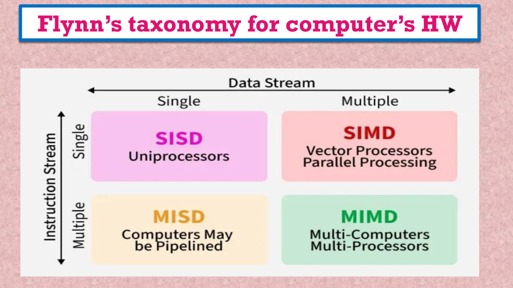
Figure on slide 5 shows all four as block diagrams (CPU = Central Processing Unit, CU = Control Unit, PU = Processing Unit):
- SISD: one instruction into one CPU, one data stream (serial processor).
- SIMD: one instruction goes to a CPU that feeds several CPUs, each with its own data. A second drawing shows control broadcasting the instruction stream to processors P1..PN, each with its own data stream (DS) from shared memory or an interconnection network.
- MISD: several instructions go to CPUs that all work on the same single data. Slide note: no real examples, possibly some pipeline architectures.
- MIMD: several CUs each send their own instruction (I1..In) to their own PU, each with its own data (D1..Dn). Labelled multiprocessor and multicomputer.
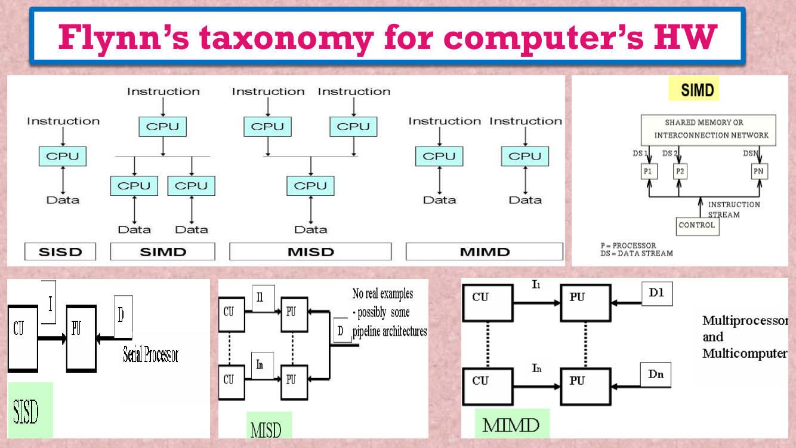
Slides 4–5
SISD (Single Instruction, Single Data): Single Instruction stream, Single Data stream
- Has only one CPU (Central Processing Unit); also called von Neumann computers, from personal computers (PC) to large mainframes.
- A sequential machine: processes one instruction at a time on single data in a single processing element.
- CPU and memory communicate using a bus.
- Speed limited by CPU speed and bus speed.
- Figure (slide 6): control sends the instruction stream to the processor; the processor exchanges the data stream with memory.
Example: sum of N numbers a1..aN needs N memory accesses and N-1 additions in sequence, so the cost is O(N). SISD algorithms contain no parallelism (only one processor).
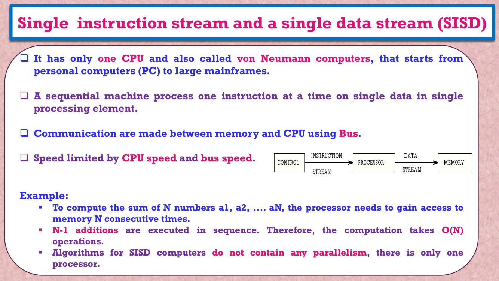
Ways to speed up SISD by adding concurrency:
- Multiprogramming: several user programs share the CPU (e.g. round robin time scheduling).
- Execute I/O operations simultaneously with the user's program.
- Parallel functional units inside the processing unit (multifunction PU); each unit has a specific function and its own data stream.
- Pipelining: instruction is broken into parts, each part on a processing element. Phases: fetch, decode, operand fetch, ALU (Arithmetic Logic Unit) execution, write back.
Slides 6–7
SIMD: Single Instruction, Multiple Data (array and vector processor)
- A type of parallel computer.
- Single instruction: all processing units execute the same instruction at any given clock cycle.
- Multiple data: each processing unit operates on a different data element.
- Best for problems with a high degree of regularity, such as graphics/image processing.
- Figure (slide 8): a control unit broadcasts one instruction stream to processors P1..PN; each gets its own data stream (DS1..DSN) from shared memory or an interconnection network.
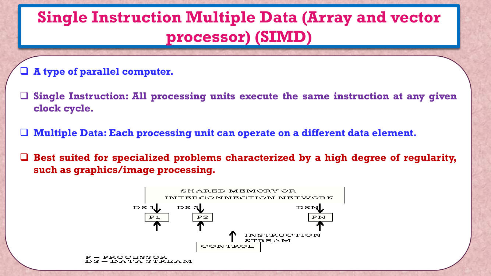
- Processors work synchronously; a global clock keeps them in lockstep: at each tick all run the same instruction on different data.
- Two varieties: processor arrays and vector pipelines.
- Processor array examples: Thinking Machines CM-2, MasPar MP-1 and MP-2, ILLIAC IV.
- Vector pipeline examples: IBM 9000, Cray X-MP, Y-MP and C90, Fujitsu VP, NEC SX-2, Hitachi S820, ETA10.
- Most modern computers, particularly those with graphics processor units (GPUs), use SIMD instructions and execution units.
- Best for matrices or vectors: same operation on different parts of the matrix.
- Total result stored in shared memory.
- Processing elements (PEs) are slaves under a master CU.
- CU functions: decode instruction, generate micro-operations for PEs, generate and broadcast common memory addresses, receive data from PEs and produce final results.
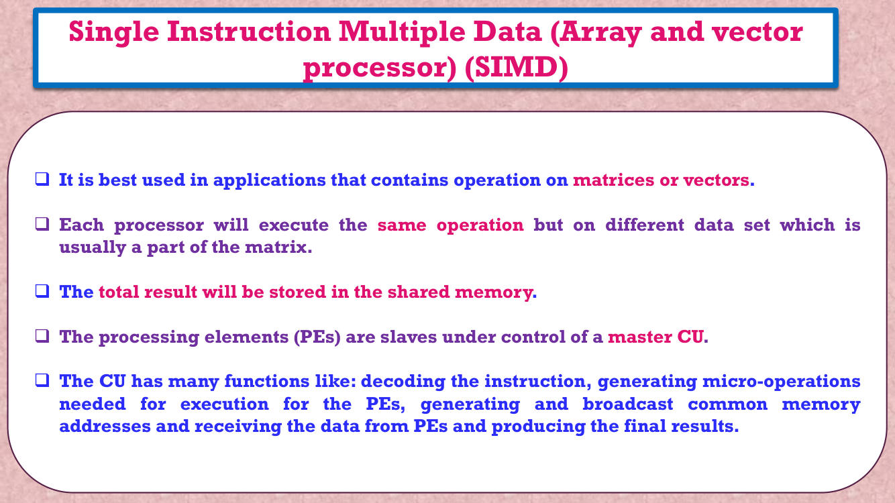
Example 1: adding matrices A + B = C (order 2, 4 processors): A11+B11=C11, A12+B12=C12, A21+B21=C21, A22+B22=C22. Same instruction (add) to all 4 at once: 1 step instead of 4 on a sequential machine. An instruction or datum can be simple (add two numbers) or complex (merge two lists).
Example 2: active and inactive processors. Sometimes only a subset should run an instruction. The instruction encodes whether each processor is active (executes) or inactive (waits for the next instruction). Array [5, 12, 3, 9, 20, 1, 15, 4] on 8 processors, double values greater than 10: active = 12, 20, 15; inactive = 5, 3, 9, 1, 4.
Communication (SIMD and MIMD (Multiple Instruction, Multiple Data)): shared memory with shared variables, or an interconnection network with message passing (distributed memory).
Slides 8–12
MISD: Multiple Instruction, Single Data (slide title says SDMI) (pipelined processors)
- The slide title writes "Single Data Multiple Instruction (SDMI)"; the body calls it MISD. Same thing.
- N processors, each with its own control unit, share a common memory.
- N instruction streams (programs) and one data stream.
- Parallelism: processors do different things at the same time on the same datum.
- Useful where the same input is subjected to several different operations.
- Figure (slide 13): memory sends one data stream (DS) to Processors One..N; each processor has its own control unit and instruction stream (IS ONE..IS N).
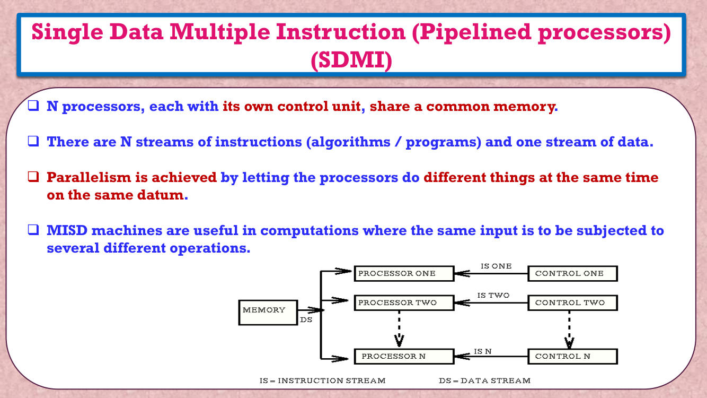
Example: is number Z prime? Try all divisions. With N = Z-2 processors, each takes Z as input and divides by its own divisor, so primality is checked in one step. If N < Z-2, each processor gets a subset of divisors. For most applications no commercial machines exist with this design.
Pipelined processor is another MISD example: break a complex, time-consuming function into simpler sequential operations; stages overlap like an assembly line. Output of one stage is the input of the next; buffers hold output temporarily until the next stage is ready. Figure (slide 15): input data into Processor 1, then Buffer 1, Processor 2, Buffer 2, ... Processor N.
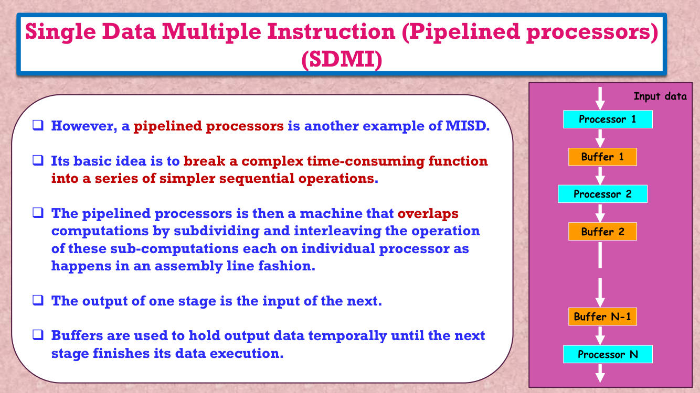
Slides 13–15
MIMD: Multiple Instruction, Multiple Data (multiprocessors or multi-computers)
- The most general and most powerful class.
- N processors, N instruction streams, N data streams.
- Each processor is fully programmable and runs its own program on different data, under its own control unit.
- Processors operate asynchronously (typically): different things on different data at the same time.
- Figure (slide 16): Control One..N each send their own instruction stream (IS1..ISN) to Processor One..N; each processor gets its own data stream (DS1..DSN) from shared memory or an interconnection network.
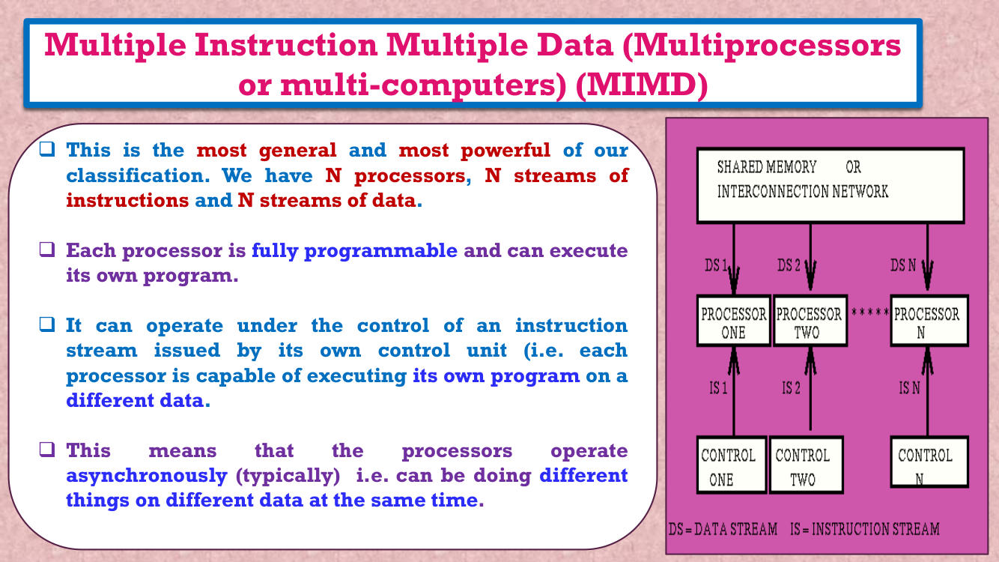
| MIMD type | Communication | Also called | Examples |
|---|---|---|---|
| Multiprocessors | Shared memory | Tightly coupled machines | ENCORE, MULTIMAX, SEQUENT, BALANCE |
| Multi-computers | Interconnection network | Loosely coupled machines | Cloud, grid, cluster |
Slides 16–17
Physically vs logically shared/distributed memory
- Physically shared memory (figure left): several processors connect through a network to one common memory.
- Physically distributed memory (figure right): each processor has its own memory; processors connect through a network.
| Logically shared | Logically distributed | |
|---|---|---|
| Physically shared | Common memory | Simulated message passing |
| Physically distributed | Distributed shared memory | Message passing |

Slide 18
Tightly coupled systems
- Systems using shared memory are multiprocessors = tightly coupled machines.
- Delay when sending a message is small; data rate is high (many bits per second).
- Typically: several processors on a single chassis, access to common memory through a high-speed bus, under a single OS (Operating System).
- Needs strong interaction at HW and OS levels, at the dataset level and at the program execution level.
Examples (slide 20):
- Bus-based multiprocessor: several CPUs (each with a cache) and one memory all on a single bus.
- Crossbar switch (a): a grid with CPUs (P) on rows and memories (M) on columns; a crosspoint switch at each intersection connects any CPU (Central Processing Unit) to any memory.
- Omega switching network (b): CPUs on the left, memories on the right, joined by two stages of 2x2 switches.
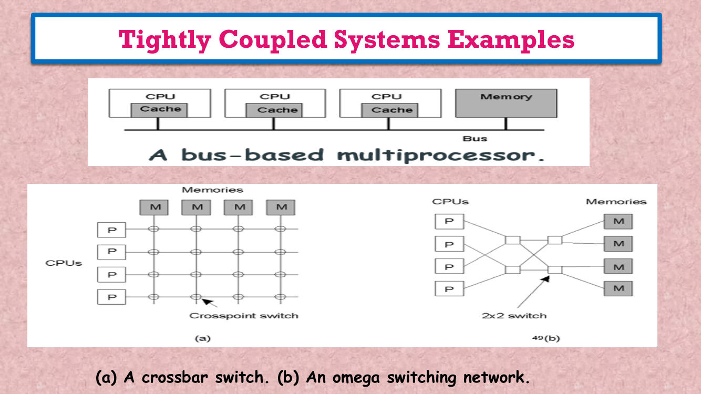
Slides 19–20
Loosely coupled systems
- Multiple computers communicate at the I/O level through intermachine messages.
- Delay is large; data rate is low.
- Transferring data between two processors needs cooperation at the OS (Operating System) level.
- Figure (slide 21), message passing architecture: four nodes, each a processor (P) with its own memory module (M), all connected to a message passing network.

Examples (slide 22):
- Grid multiprocessor (a): 4x4 mesh of nodes; each connected to its up/down/left/right neighbours.
- Hypercube multiprocessor (b): 16 nodes (two 3-D cubes joined) where each node links to several others, drawn with solid and dashed edges.
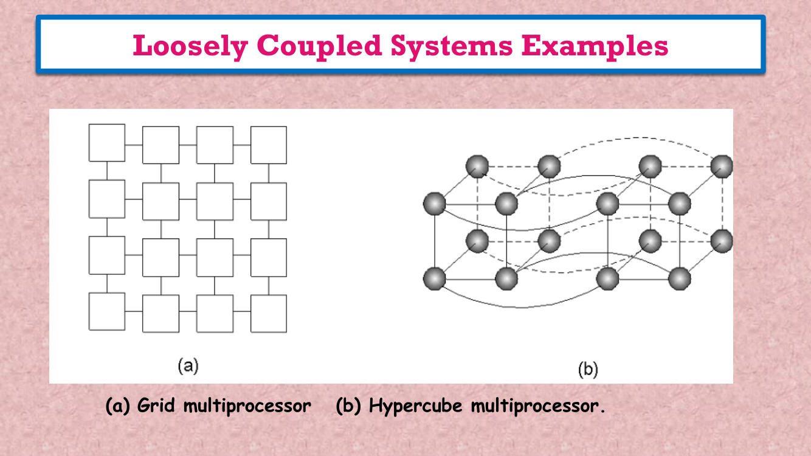
Slides 21–22
Tightly vs loosely coupled
| Tightly coupled | Loosely coupled | |
|---|---|---|
| Machine type | Multiprocessor | Multi-computer |
| Communication | Shared memory | Interconnection network / messages |
| Delay | Small | Large |
| Data rate | High | Low |
| Interaction level | Strong at HW and OS (Operating System) level | I/O level, OS cooperation per transfer |
| Examples | Bus-based, crossbar, omega | Grid, hypercube; cloud, cluster |
| Typical use | Parallel systems (one problem) | Distributed systems (many unrelated problems) |
- The typical use is not always true.
- A system can be physically loosely coupled but logically tightly coupled, using OS constructs.
- Grid and clusters are loosely coupled systems that can work in order to accomplish one job.
- For one problem, processors should be organized by a single OS that organizes interaction, assigns tasks to each processor and ensures synchronization of tasks.
Slide 23
Must-know in one screen
- Flynn's taxonomy: classify by instruction streams and data streams, giving SISD (Single Instruction, Single Data), SIMD (Single Instruction, Multiple Data), MISD (Multiple Instruction, Single Data), MIMD (Multiple Instruction, Multiple Data).
- SISD = one CPU (Central Processing Unit), von Neumann computer, sequential, no parallelism; sum of N numbers is O(N) with N-1 additions.
- SISD speed-ups: multiprogramming, simultaneous I/O, parallel functional units, pipelining.
- Pipeline phases: fetch, decode, operand fetch, ALU execution, write back.
- SIMD = same instruction on different data each clock cycle, lockstep with a global clock; best for matrices, vectors, graphics.
- SIMD varieties: processor arrays (CM-2, MasPar, ILLIAC IV) and vector pipelines (Cray, IBM 9000, NEC SX-2).
- SIMD processing elements are slaves of a master control unit; GPUs use SIMD.
- SIMD can mark processors active or inactive (double values greater than 10: 12, 20, 15 active).
- MISD = N control units, N instruction streams, one data stream; example: testing if Z is prime; pipelined processors; no commercial machines.
- MIMD = N processors, N instruction streams, N data streams; most general and powerful; asynchronous.
- MIMD with shared memory = multiprocessors = tightly coupled (ENCORE, MULTIMAX, SEQUENT, BALANCE).
- MIMD with interconnection network = multi-computers = loosely coupled (cloud, grid, cluster).
- Tightly coupled: small delay, high data rate, single chassis, single OS (Operating System); examples bus-based, crossbar, omega.
- Loosely coupled: large delay, low data rate, I/O-level messages; examples grid and hypercube.
- Tightly coupled = parallel systems; loosely coupled = distributed systems; physically loose can be logically tight via OS.
Lecture 3 · Introduction to Distributed Systems, Part 3
Shared vs distributed memory (physical and logical)
- Physically shared memory: all processors reach one memory through a network.
- Physically distributed memory: each processor has its own memory; processors are joined by a network.
- Logical view = how the programmer sees memory. Physical view = how the hardware is built.
| Logically shared | Logically distributed | |
|---|---|---|
| Physically shared | Common memory | Simulated message passing |
| Physically distributed | Distributed shared memory | Message passing |
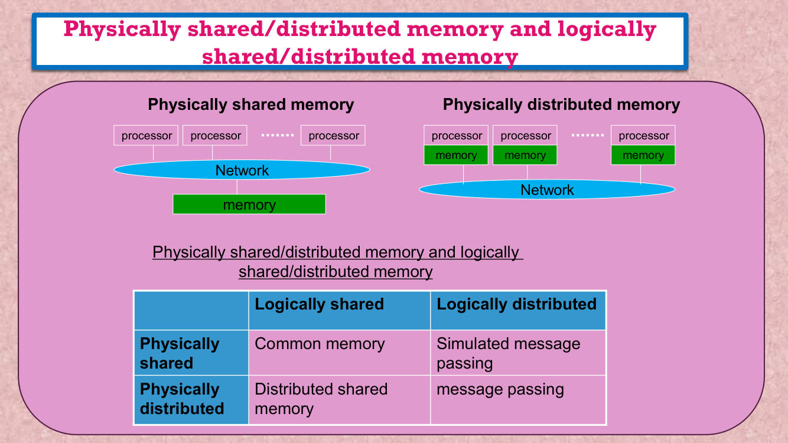
Slide 4
Tightly coupled systems (recap)
- In SIMD (Single Instruction Multiple Data) and MIMD (Multiple Instruction Multiple Data) systems, processors communicate via shared memory or an interconnection network.
- Shared memory = multiprocessors = tightly coupled machines.
- Interconnection network = multi-computers = loosely coupled machines.
- Tightly coupled: message delay is small, data rate is high (many bits per second).
- Typical multiprocessor: processors on a single chassis, access to common memory through a high-speed bus, under a single OS (Operating System).
- Needs strong interaction at the hardware (HW) and OS level, the dataset level, and the program execution level.
- Examples (slide 6): bus-based multiprocessor (CPUs with caches + memory on one bus), crossbar switch (crosspoint switch at each CPU (Central Processing Unit)/memory junction), omega switching network (2x2 switches between CPUs and memories).

Slides 5–6
Loosely coupled systems (recap)
- Multiple computers communicate at the I/O level through intermachine messages.
- Delay is large, data rate is low.
- A data transfer needs cooperation between the two processors at the OS (Operating System) level.
- Architecture = message passing architecture: each P (processor) has its own M (memory module), all joined by a message passing network.
- Examples (slide 8): grid multiprocessor, hypercube multiprocessor.
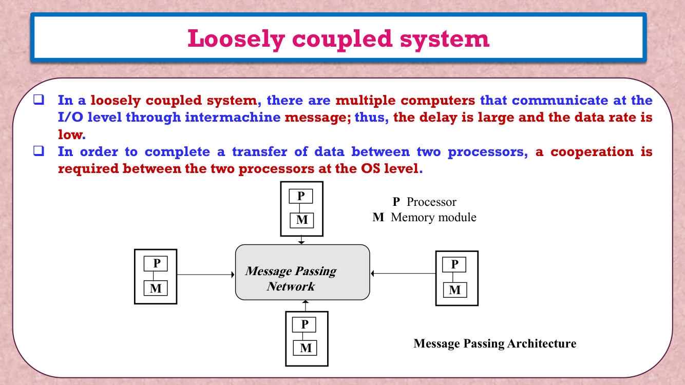

Slides 7–8
Tightly vs loosely coupled: how they are used
| Tightly coupled | Loosely coupled | |
|---|---|---|
| Memory | Shared memory | Own memory, message passing |
| Delay / data rate | Small delay / high rate | Large delay / low rate |
| Tends to be used as | Parallel systems (one single problem) | Distributed systems (many unrelated problems) |
- "Tends to" only: not always true.
- A system can be physically loosely coupled but logically tightly coupled, made possible by OS (Operating System) constructs.
- Grid and clusters are loosely coupled systems that can work in an orderly fashion on one job.
- For that, the processors need a single OS that organizes their interaction, assigns tasks to each processor and ensures synchronization of the tasks.
Slide 9
Similar terms for distributed systems
- Parallel systems
- Concurrent systems
- Networked systems
- Decentralized systems
Slide 10
Parallel computing
- Computation in which processes execute simultaneously.
- A large problem is divided into smaller ones, solved at the same time.
- Architecture where multiple compute resources are used simultaneously to solve one problem.
- Forms: bit-level, instruction-level, data, task parallelism.
- Task is broken into many very similar subtasks, processed independently, results combined afterwards.
- Used for years in high-performance computing (supercomputers).
- Interest grew because of physical constraints preventing frequency scaling.
- Power use (so heat) became a concern, so parallel computing became the dominant paradigm in computer architecture, mainly as multi-core processors.
- Closely related to concurrent computing: often used together and often conflated.
Slides 11–12
Concurrent systems
- Two or more tasks run in overlapping time periods instead of sequentially.
- Applies when there is more than one task at the same time; improves overall execution speed.
- Examples: Operating systems and Database management systems (DBMS).
- Designed to operate indefinitely, with automatic recovery from failure, and not terminate unexpectedly.
- They use shared resources, so they need some kind of arbiter in their implementation.
Slide 13
Parallel vs concurrent
| Case | Example |
|---|---|
| Parallelism without concurrency | Bit-level parallelism |
| Concurrency without parallelism | Multitasking by time-sharing on a single-core CPU (Central Processing Unit) |
- In parallel computing the subtasks are related and similar.
- In concurrent computing the processes often do not address related tasks.
- When related (typical in distributed computing), the tasks may have a varied nature and often need inter-process communication during execution.
Slide 14
Centralized systems
- Use client/server architecture: one or more client nodes connected directly to a central server.
- Most common type in organizations: client sends a request to the company server and gets the response.
- Components: 1. Node (computer, mobile, etc.), 2. Server, 3. Communication link (cables, Wi-Fi, etc.).
- Scaling: only vertical scaling on the central server is possible. Horizontal scaling contradicts the single central unit idea.
Limitations
- Cannot scale up vertically after a certain limit, even if server HW and software are upgraded.
- Bottlenecks when traffic spikes: the server has a finite number of open ports. At a shopping sale it can suffer a DoS (Denial of Service) (Denial-of-Service) or DDoS (Distributed Denial of Service) (Distributed Denial-of-Service) effect.
Slides 15–16
Decentralized systems
- Every node makes its own decision.
- Final behaviour = aggregate of the decisions of the individual nodes.
- No single entity receives and responds to requests.
| Characteristic | Meaning |
|---|---|
| Lack of a global clock | Each node is independent, with its own clock |
| Multiple central units | More than one node/server can listen for connections |
| Dependent failure of components | One central node failing breaks a part of the system, not the whole |
| Centralized | Decentralized | |
|---|---|---|
| Decision maker | One central server | Every node |
| Scaling | Vertical only | Multiple central units |
| Failure | Server down = system down | Only a part fails |
Slide 17 (last row of the comparison is a restatement of slides 15 to 17)
Advantages of distributed over centralized systems
| Advantage | Meaning |
|---|---|
| Performance | A collection of processors often gives higher performance and a better price/performance ratio than a centralized computer; may exceed a mainframe or supercomputer |
| Distribution | Many applications are by nature spatially separated (banking, commercial, automotive) |
| Reliability (fault tolerance) | If some machines crash, the system can survive |
| Incremental growth | Add new machines as processing needs grow |
| Sharing of data/resources | Shared data is essential (banking, computer supported cooperative work, reservation systems); also expensive printers |
| Communication | Facilitates human-to-human communication |
Slide 18
Disadvantages (difficulties) of distributed systems
| Difficulty | Meaning |
|---|---|
| Developing distributed software | How should operating systems, programming languages and applications look? |
| Networking problems | Caused by the network infrastructure: loss of messages, overloading |
| Security problems | Sharing creates the problem of data security |
Slide 19
Design characteristics: resource sharing and openness
Careful design must consider some or all of these characteristics.
- Resource sharing: use any hardware, software or data (resources) anywhere in the system. A resource of one member can be shared by clients and other members through the network.
- Resource Manager = software module (based on management policies) that provides interfaces so clients can manipulate the resource.
- Provider and user interact: client/server model.
- Openness (extensible in various ways): concerned with extensions and improvements.
- Detailed interfaces of components must be published.
- New components must be integrated with existing ones.
- Differences in data representation of interface types across processors (different vendors) must be resolved.
- New resource-sharing services can be added without disruption or duplication of existing services.
Slides 20–21
Design characteristics: transparency, shareability, autonomy, reliability
- Transparency: hide all unnecessary details from users. Example: location transparency, clients need not know where servers are. (Slide asks "Other types ????", see the Transparency card below.)
- Shareability: the component systems can use each other's resources.
- Local autonomy: each processor manages its local resources.
- Improved reliability and availability: a disruption does not stop the whole system, because resources are spread across multiple computers.
Slide 22
Design characteristics: performance
- Improved performance via load balancing and resource replication.
- Combined processing power of many computers gives much more power than a centralized system with multiple CPUs.
Four factors influencing performance
- Performance of individual workstations.
- Speed of the communication infrastructure.
- Extent to which reliability (fault tolerance) is provided (replication and keeping coherence cause large overheads).
- Flexibility in workload allocation: e.g. idle workstations allocated automatically to a user's task.
Slide 23
Design characteristics: concurrency and scalability
- Concurrency: all concurrent access must be synchronized to avoid:
- Lost update
- Dirty read
- Incorrect summary
- Unrepeatable read
- Scalability:
- Flexible to grow in size, efficiently using the new software and hardware added.
- Stays efficient even with a significant increase in users and resources.
- Cost of adding resources should be reasonable.
- Performance loss with more users and resources should be controlled.
Slide diagrams (T1, T2 = two transactions)
| Problem | What the slide shows |
|---|---|
| Lost update | T1: read_item(X); X = X + N. T2: X = X + 10; write_item(X). T2's write overwrites or is overwritten by T1's work. |
| Dirty read | T1: read_item(X); X = X - N; write_item(X); later read_item(Y). T2 meanwhile: read_item(X); X = X + M; write_item(X) on T1's not-yet-final value. |
| Incorrect summary | T2: sum = 0; read_item(A); sum = sum + A; read_item(X); sum = sum + X; read_item(Y); sum = sum + Y. T1 meanwhile: read_item(X); X = X - N; write_item(X); ... read_item(Y); Y = Y + N; write_item(Y). T2's sum mixes values from before and after T1's update. |
| Unrepeatable read | T1: Read(X); Write(X). T2: Read(X); Read(X). T2 reads X twice and gets different values because T1 wrote in between. |
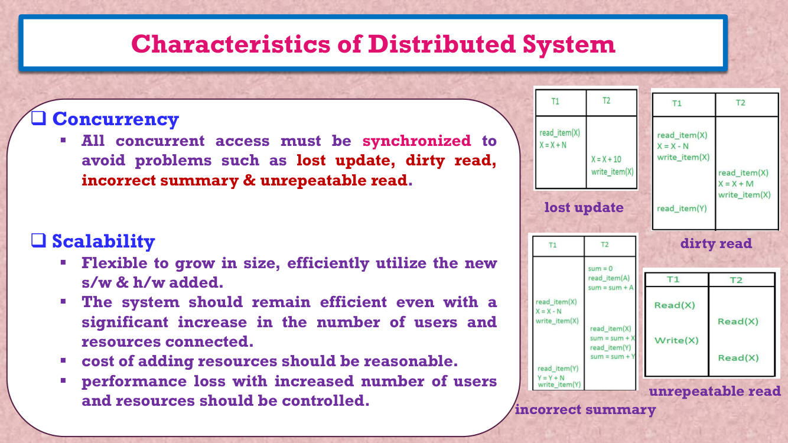
Slide 24
Design characteristics: heterogeneity
- Heterogeneity = not having the same programming languages, OSs, HW platforms, network protocols.
- Distributed applications are typically heterogeneous:
- Different hardware: mainframes, workstations, PCs (Personal Computers), servers.
- Different software: UNIX, MS Windows, IBM OS (Operating System)/2, real-time OSs.
- Unconventional devices: teller machines, telephone switches, robots, manufacturing systems.
- Diverse networks and protocols: Ethernet, FDDI (Fiber Distributed Data Interface), ATM (Asynchronous Transfer Mode), TCP/IP (Transmission Control Protocol / Internet Protocol), Novell Netware.
Slide 25
Design characteristics: fault tolerance
- The system handles errors appropriately and keeps working even if parts fail.
- Achieved via HW redundancy and software recovery.
- Main issue related to reliability: the system must detect faults and act reasonably.
| Way to react | Meaning |
|---|---|
| Mask the fault | Keep working, possibly with reduced performance, but no loss of data/information |
| Fail gracefully | React in a predictable way, possibly stop functionality for a short period, but no loss of data/information |
- Data must not be lost; redundant copies on different servers must be kept consistent.
- More copies = better availability, but consistency is harder to keep.
Slide 26
Single system image and transparency types (1 of 2)
- Goal: the single system image, "fooling" everyone into thinking the collection of machines is one simple computer.
| Type | Meaning | Example |
|---|---|---|
| Access transparency | Local and remote resources accessed with identical operations | Navigation in the Web; SQL (Structured Query Language) queries |
| Location transparency | Users cannot tell where resources (CPUs, files, databases) are; the name must not encode the location | Pages in the Web; tables in distributed databases |
| Migration (mobility) transparency | Resources can move from one location to another without changing their names | Web pages |
| Replication transparency | System makes extra copies (for performance and/or reliability) without users noticing | Several copies of a file; the closest copy to the client is accessed |
| Concurrency transparency | Users do not notice other users, even on the same resources | ATM (Automatic Teller Machine) network; DBMS (Database Management System) |
Slides 27–28
Transparency types (2 of 2)
| Type | Meaning | Example |
|---|---|---|
| Failure transparency | Conceals faults; applications complete their task despite failures in some components | DBMS |
| Performance transparency | Load variation must not degrade performance; system reconfigured as loads vary (automatic reconfiguration; difficult to achieve) | - |
| Scaling transparency | System and applications expand in scale without changing the system structure or application algorithms | World Wide Web; distributed database |
Slide 29
The need for high-performance computers
- Applications like weather prediction and artificial intelligence are very computationally intensive and need vast processing power.
- A 24 hour weather forecast needs about 10^12 operations.
- A Cray-1 does 10^8 operations per second.
Worked example
- Formula: time = operations / speed.
- Numbers: 10^12 / 10^8 = 10^4 seconds.
- Convert: 10^4 s / 3600 = 2.78 hours, i.e. about 2.7 hours (slide figure).
- A long-range forecast (e.g. a week) needs much more powerful computers.
- Faster electronic components are limited by the speed of light, so they are ultimately of no good.
- The only way forward is parallelism: if several operations run simultaneously, total computation time is reduced.
- The distributed version has the potential of being 3 times as fast as the sequential machine.
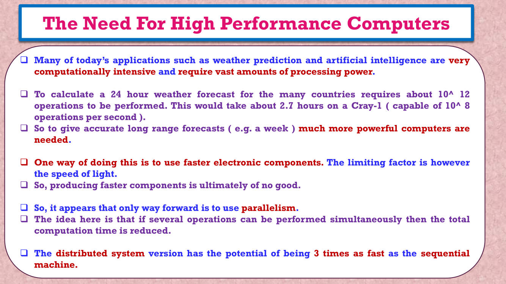
Slide 30
Speedup and efficiency
- A parallel algorithm runs two or more processes on two or more processors simultaneously.
- Two quality measures: speedup and efficiency.
- Ts = time of the fastest serial algorithm on one processor. Tp = time of the parallel algorithm on N processors.
Efficiency E(N) = S(N) / N
Worked example: Ts = 8 s, Tp = 2 s, N = 5.
- Speedup: S = Ts / Tp = 8 / 2 = 4.
- Efficiency: E = S / N = 4 / 5 = 0.8 = 80%.
- Meaning: speedup of 4 with 5 processors, 80% efficiency.
- Alternative definition: time of the parallel algorithm on one processor / time of the parallel algorithm on N processors.
- This is misleading: parallel algorithms contain extra operations (e.g. communication), which inflates the one-processor time and exaggerates the speedup.
- Ideal = linear speedup: speedup N with N processors, efficiency 1 (100%).
- In practice speedup is below N; efficiency is bounded above by 1.
Slides 31–32
Amdahl's law (basic form)
- Gives the theoretical speedup at fixed workload when resources (number of processors) are improved.
- F = fraction that is sequential; (1 - F) = fraction that can be parallelized.
- P = number of processors.
Worked example: 90% parallelizable, so F = 0.1, P = 5.
- Formula: 1 / (F + (1 - F) / P).
- Numbers: 1 / (0.1 + (1 - 0.1) / 5) = 1 / (0.1 + 0.9 / 5) = 1 / (0.1 + 0.18).
- Result: 1 / 0.28 = 3.57, roughly 3.6.
Slide diagram (word-count example): sequential (divide up the wordlist; send tasks to each computer) then parallel (each computer counts the "A", "B", ... "Z" words) then sequential (add the 26 partial results; divide the sum by the total number of words; report the average).
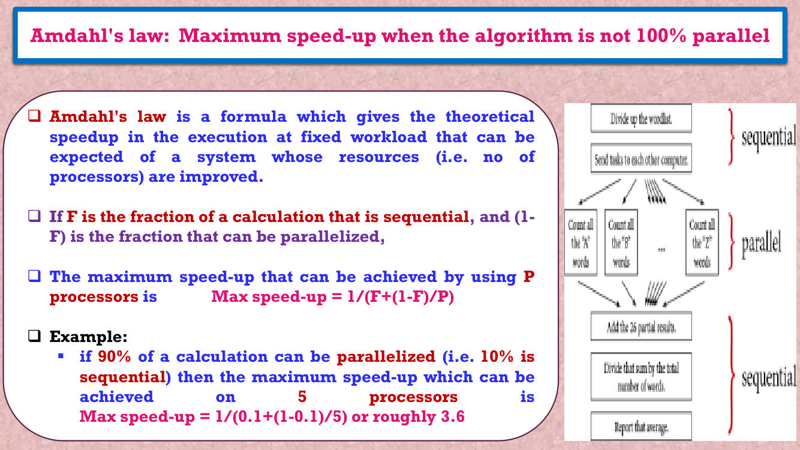
Slide 33
Amdahl's law (general form and graph)
Slide 34: "What kinds of problems do we solve with Amdahl's law? Performance improvement problems."
- Entire system = part that cannot be improved (time T) + part that can be improved (fraction fE).
- TO = time for fE without improvement. TE = time for fE with improvement.
- Improvement factor fI = TO / TE.
fI = TO / TE
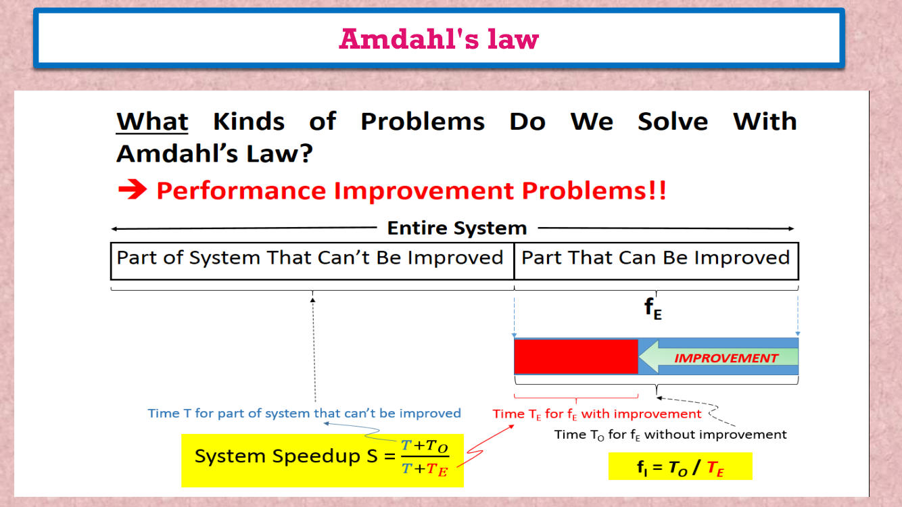
Slide 35 graph: Speedup (y-axis, 0 to 20) vs number of processors (x-axis, 1 to 65536). Curves for parallel portion 50%, 75%, 90%, 95%. Each curve flattens at a limit.
| Parallel portion | Limit (speedup plateau) | Check: 1 / F |
|---|---|---|
| 50% | 2 | 1 / 0.5 = 2 |
| 75% | 4 | 1 / 0.25 = 4 |
| 90% | 10 | 1 / 0.1 = 10 |
| 95% | 20 | 1 / 0.05 = 20 |
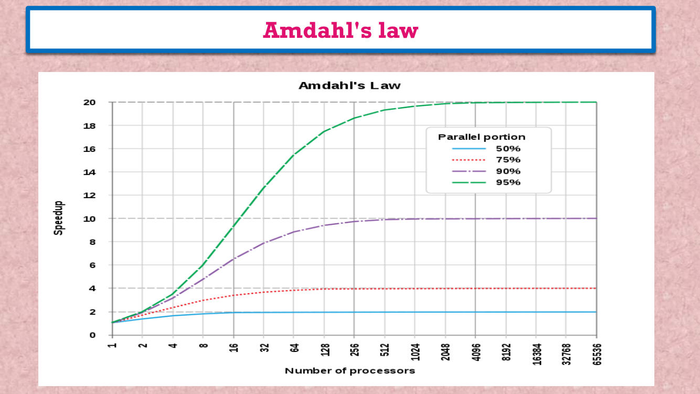
Slides 34–35 (the plateau table is read from the graph; 1/F is a brief check)
Amdahl's law: more processors, diminishing returns
Same case: 90% parallelizable, F = 0.1.
| P | Formula with numbers | Result |
|---|---|---|
| 5 | 1 / (0.1 + 0.9 / 5) = 1 / 0.28 | 3.6 |
| 10 | 1 / (0.1 + 0.9 / 10) = 1 / (0.1 + 0.09) = 1 / 0.19 | 5.3 |
| 20 | 1 / (0.1 + 0.9 / 20) = 1 / (0.1 + 0.045) = 1 / 0.145 | 6.9 |
- 5 to 10 processors (twice the hardware): 3.6 to 5.3, check 5.3 / 3.6 = 1.47, so about 50% faster.
- 10 to 20 processors (doubling again): 5.3 to 6.9, check 6.9 / 5.3 = 1.30, so only about 30% faster.
- Amdahl's point: using lots of parallel processors is not a viable way to get the big speed-ups people want.
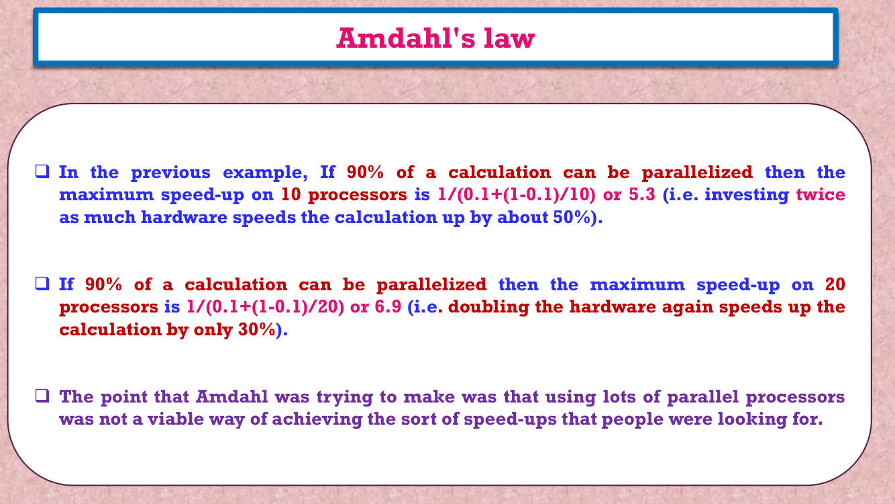
Slide 36
Factors that limit speedup
| Factor | Meaning |
|---|---|
| 1. Software overhead | Even with an equivalent algorithm, the concurrent version has more code to execute (e.g. extra index calculations because data is "split up" among processors) |
| 2. Load balancing | Speedup is limited by the slowest node; every node should do the same amount of work |
| 3. Communication overhead | If communication and calculation cannot overlap, time spent communicating directly degrades speedup (processors are not calculating) |
Slide 37 (slide 38 is a "Thank you" slide)
Must-know in one screen
- Physically shared + logically shared = common memory; physically distributed + logically shared = distributed shared memory; physically distributed + logically distributed = message passing; physically shared + logically distributed = simulated message passing.
- Shared memory = multiprocessors = tightly coupled (small delay, high data rate, single OS (Operating System)). Interconnection network = multi-computers = loosely coupled (large delay, low rate).
- Tightly coupled tends to be parallel systems; loosely coupled tends to be distributed systems (not always).
- Parallel = simultaneous execution of similar subtasks; concurrent = overlapping time periods, needs an arbiter for shared resources.
- Parallelism without concurrency: bit-level. Concurrency without parallelism: time-sharing on a single-core CPU (Central Processing Unit).
- Centralized: client/server, vertical scaling only, bottleneck/DoS (Denial of Service) risk. Decentralized: every node decides, no global clock, multiple central units, partial failure.
- Advantages of DS: performance, distribution, reliability, incremental growth, sharing, communication.
- Difficulties of DS: software development, networking problems (message loss, overload), security.
- Heterogeneity is solved by middleware.
- Fault tolerance: mask the fault (reduced performance, no data loss) or fail gracefully (short stop, no data loss). More copies = more availability but harder consistency.
- Concurrency problems: lost update, dirty read, incorrect summary, unrepeatable read.
- Single system image transparency types: access, location, migration, replication, concurrency, failure, performance, scaling.
- Speedup S = Ts / Tp; Efficiency E = S / N; ideal = linear speedup (S = N, E = 1). Example: 8 / 2 = 4; 4 / 5 = 80%.
- Amdahl: Max speed-up = 1 / (F + (1 - F) / P). F = 0.1: P = 5 gives 3.6, P = 10 gives 5.3, P = 20 gives 6.9.
- Speedup limiters: software overhead, load balancing (slowest node), communication overhead.
Lecture 4 · Communication in Distributed Systems
Why communication is the big deal
- The single most important difference between a distributed system and a uniprocessor system is interprocess communication.
- Uniprocessor: interprocess communication implicitly assumes shared memory.
- Distributed system: no shared memory whatsoever, so communication must be rethought from scratch.
- All communication in a distributed system is based on message passing.
Interprocessor communication: with N processors, each with its own data stream (SIMD [Single Instruction, Multiple Data] and MIMD [Multiple Instruction, Multiple Data]), data must be exchanged between processors. Two ways:
- Shared memory and shared variables
- Interconnection network (message passing)
Slides 3–4
Way 1: Shared memory (SM) and shared variables
- A global address space accessible by all N processors.
- Communicate by writing into global memory; the other processor reads it.
- Passing a number from processor x to processor y takes two steps: (1) x writes the number at a location y can reach; (2) y reads that location.
- SM solves the communication problem but adds the problem of simultaneous access to the same location.
- Different locations: all processors can access SM simultaneously. Same location at the same time: problems.
Slide 5 example: shared variable x, accessed by P1 and P2 (x starts at 0)
- P1 runs x = x + 1, P2 runs x = x + 2. Final x can be 1, 2 or 3.
- P1 completes before P2 reads x: x = 3. P2 completes before P1 reads x: x = 3.
- Both read x before either updates it: the last one to finish decides. P1 last: x = 1. P2 last: x = 2.
- In a multiuser real-time environment, who finishes last changes from run to run, so the final value varies: NON-DETERMINANCY (non-determinism).
Slides 4–6
Shared memory example: x := x + 1 (both processors)
The assignment x := x + 1 is normally done in three stages:
- Copy the value of x into a register
- Add 1 to the value in the register
- Store the register value at the address of x
P1 and P2 both execute it, x = 0 initially. Step by step:
- P1 copies x (= 0) into its register.
- P2 copies x (= 0) into its register.
- P1 adds 1 (P2 adds at the same time).
- P1 stores x (= 1).
- P2 adds 1 to its register (still based on 0).
- P2 stores x (= 1).
Slide 7
Four subclasses of shared memory computers
Depends on whether 2 or more processors can access the same location simultaneously.
| Type | Full name | Read same location | Write same location |
|---|---|---|---|
| EREW | Exclusive Read, Exclusive Write | No (exclusive) | No (exclusive) |
| CREW | Concurrent Read, Exclusive Write | Yes | No (exclusive) |
| ERCW | Exclusive Read, Concurrent Write | No (exclusive) | Yes |
| CRCW | Concurrent Read, Concurrent Write | Yes | Yes |
- EREW: no 2 processors may simultaneously read from or write into the same location.
- CREW: multiple reads from one location allowed; write still exclusive.
- ERCW: multiple writes into one location allowed; read stays exclusive.
- CRCW: both multiple read and multiple write allowed.
Slide 8
Concurrent write conflicts and how many processors are feasible
- Concurrent read: each processor makes a copy of the contents and stores it in its own register (RAM [Random Access Memory]). No problem.
- Problems arise with concurrent write: if several processors store (possibly different) data at the same address, which one succeeds? We need a deterministic way to define the location contents after a concurrent write.
Ways to resolve write conflicts
- Assign priorities to processors; accept the value from the highest priority processor.
- All may write only if the values they store are equal; otherwise access is denied to ALL processors.
- Store the max / min / sum / average of the values (numeric data).
Feasibility
- Letting P processors access P memory locations simultaneously is feasible only for relatively small P (< 30), because communication hardware cost is too high and the memory locations are physically large.
- So shared-memory SIMD (Single Instruction, Multiple Data) machines are unrealistic; no commercial machines exist with this design.
- MIMD (Multiple Instruction, Multiple Data) machines (much more powerful processors) do exist with shared memory, but with small numbers of processors (2–30).
Slides 9–10
Parallel search example (the four SM types compared)
Task: N processors search a list S = {L1, L2, ..., Lm} for the index of a given element x. 1 < N <= m. x may appear several times; any index will do.
Algorithm: Shared Memory search (S, x, k)
- Step 1: FOR i = 1 to N in parallel: read x (all N processors read the element to search for).
- Step 2: FOR i = 1 to N in parallel: read sublist Si = {L((i-1)m/N)+1 ... L(im/N)} and do a sequential search on it. Return Ki = -1 if not in the list, else the index.
- Step 3: FOR i = 1 to N in parallel: if Ki > 0 then K = Ki (write back the place of the element).
Small worked run (my own numbers: m = 8, N = 4, x = 9)
S = {5, 9, 3, 7, 9, 2, 6, 1}. Each processor gets m/N = 2 elements.
- P1: {5, 9} gives K1 = 2. P2: {3, 7} gives K2 = -1. P3: {9, 2} gives K3 = 5. P4: {6, 1} gives K4 = -1.
- Step 3: only P1 and P3 want to write K. This is a write conflict: EREW/CREW make them go one at a time; ERCW/CRCW let both write at once and a conflict rule (e.g. priority) picks the value (K = 2). Any index is fine.
Time complexity (sequential search in step 2 takes O(m/N) worst case)
| Type | Step 1 (read x) | Step 2 | Step 3 (write K) | Overall |
|---|---|---|---|---|
| EREW | O(N) (N reads, one at a time) | O(m/N) | O(N) | O(N) + O(m/N) |
| ERCW | O(N) | O(m/N) | constant (with an appropriate conflict resolution rule) | O(N) + O(m/N) |
| CREW | constant | O(m/N) | O(N) | O(N) + O(m/N) |
| CRCW | constant | O(m/N) | constant | O(m/N) |
Slides 10–13
Summing m numbers: sequential and shared memory
Sequential
- sum := A0; FOR i = 1 TO m-1: sum := sum + Ai. That is [(A0 + A1) + A2] + A3 ... etc.
- Time O(m). Question on the slide: is addition inherently sequential? (No: split the work.)
- With N processors, each sums m/N numbers, then the partial sums are added for the final sum.
Using shared memory
The m numbers sit in global shared memory.
- Global_sum := 0.
- FOR all Pi, 0 <= i <= N-1: Local_sum := 0; calculate the local sum of m/N numbers.
- LOCK (accessing the shared place global_sum): Global_sum := Global_sum + Local_sum; UNLOCK.
- Global sum is a shared variable, so each processor needs mutually exclusive access, otherwise the final answer is incorrect.
- Time: O((m/N) + N) + S. m/N = adding m/N numbers in parallel; N = adding N numbers in sequence; S = synchronization time.
Worked run (my own numbers: m = 8 numbers 1..8, N = 4)
- Local sums: P0 = 1+2 = 3, P1 = 3+4 = 7, P2 = 5+6 = 11, P3 = 7+8 = 15 (done in parallel).
- Each takes the LOCK in turn: 0 + 3 = 3, then 3 + 7 = 10, then 10 + 11 = 21, then 21 + 15 = 36.
Slides 14–15
Summing m numbers: distributed memory (square mesh)
- A square mesh of N processors (sqrt(N) rows and sqrt(N) columns, Pij = row i, column j).
- Each processor finds the local sum of its m/N numbers.
- Each processor then passes its local sum to a neighbour at the correct time until the global sum is in P11.
Algorithm
- FOR ALL Pij (all active): find local_sum of m/N numbers.
- Phase 1 (along rows): FORALL Pij, j = sqrt(N) down to 2 (all column-j processors): Pij passes its local sum to Pi,j-1; Pi,j-1 sets local sum = new_local_sum + old_local_sum.
- Phase 2 (down column 1): FORALL Pi1, i = sqrt(N) down to 2 (1 processor in row i active): Pi1 passes its local sum to Pi-1,1; local sum = new + old.
- There are (sqrt(N) - 1) + (sqrt(N) - 1) additions and communications.
- Total time complexity: O(m/N + 2(sqrt(N)) - 2 + C), where C = time for communication.
Worked run (my own numbers: 3x3 mesh, N = 9, local sums 1..9)
Grid: row 1 = [1, 2, 3], row 2 = [4, 5, 6], row 3 = [7, 8, 9].
- Phase 1, j = 3: P12 = 2+3 = 5, P22 = 5+6 = 11, P32 = 8+9 = 17.
- Phase 1, j = 2: P11 = 1+5 = 6, P21 = 4+11 = 15, P31 = 7+17 = 24.
- Phase 2, i = 3: P21 = 15 + 24 = 39.
- Phase 2, i = 2: P11 = 6 + 39 = 45.
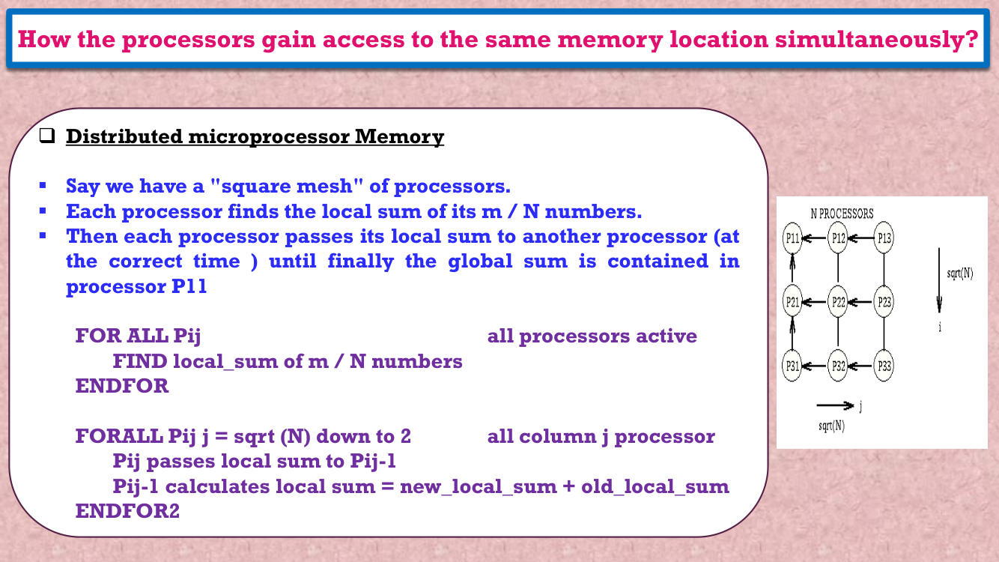
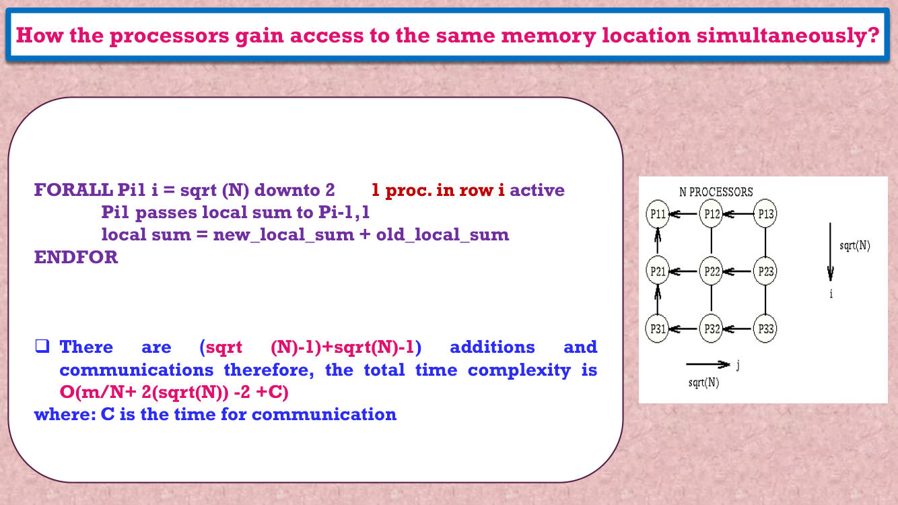
Slides 16–17 (mesh diagram: arrows run leftwards along each row into column 1, then upwards along column 1 into P11)
Way 2: Interconnection network and message passing
- Each processor has its own private (local) memory and there is no global, shared memory.
- So processors must be connected to allow data communication.
- Data held by another processor must be passed explicitly with send and receive functions.
Example: P2 runs send (x, P1); P1 runs receive (x, P2). The value of x is explicitly passed from P2 to P1. This is message passing.
- Hybrid designs combine shared and distributed memory.
- Example: clusters of processors: a high-speed bus for intracluster communication and an interconnection network for intercluster communication.
Shared memory vs message passing
| Shared memory | Message passing | |
|---|---|---|
| Memory | One global address space for all processors | Each processor has private (local) memory, no global memory |
| How data moves | Write to / read from shared variables | send and receive over the interconnection network |
| Main problem | Simultaneous access to the same location (non-determinism) | Processors must be connected; data is passed explicitly |
| Summing algorithm | LOCK / UNLOCK on global_sum, O((m/N) + N) + S | Mesh passing, O(m/N + 2(sqrt(N)) - 2 + C) |
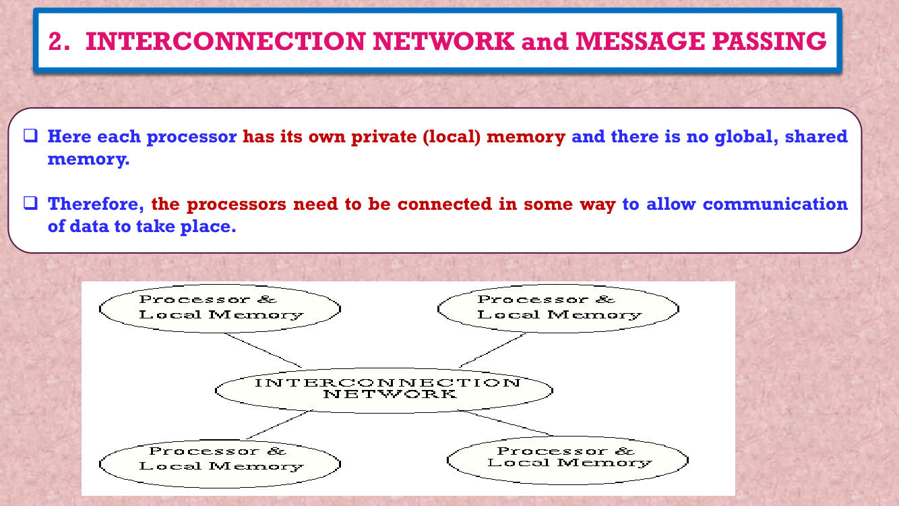
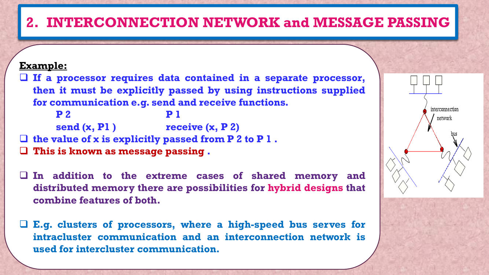
Slides 18–19 (diagrams: four boxes "Processor and Local Memory" linked through one "Interconnection Network"; clusters on buses joined by an interconnection network)
Architectural models of multi-computers
- Client/server model
- Peer-to-peer (P2P) model
- Variations: A. Multiple servers; B. Proxy servers; C. Mobile code; D. Mobile agents; E. Thin clients and compute servers
Each architecture differs in:
- The placement of components (data and workload distribution) across the network of computers.
- The interrelationship between components (the role of each one and the pattern of communication).
Slide 20
1. Client/server model
- Many distributed systems today are built from interacting clients and servers. It is the most widely employed model.
- Server: service software running on a single machine; a process on a networked computer that accepts requests from other (local or remote) processes to perform a service and responds appropriately.
- Client: a process that can invoke a service using a set of operations that forms its client interface. The requesting process is the client.
- Request and response are in the form of messages.
- The client is said to invoke an operation on the server.
- Client processes interact with individual server processes in separate host computers to access the shared resources the hosts manage.
- Servers may be clients of other servers: a web server is a client of a local file server that manages the web page files; web servers and most other internet services are clients of the DNS (Domain Name System) service, which translates internet domain names to network addresses.
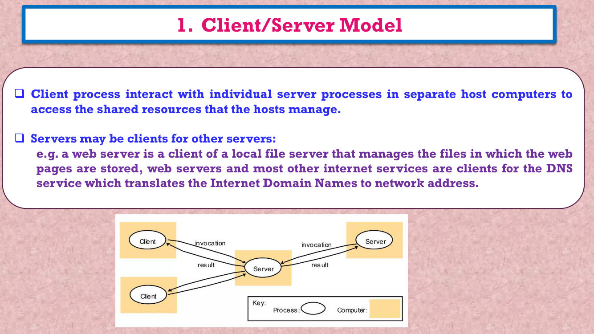
Slides 21–22 (diagram: two clients invoke a server and get results; that server in turn invokes a second server)
Client/server advantages and disadvantages
Advantages (slide 23, a "server-based" diagram with 6 points)
- Centralized control: streamlines network management and enhances security through a central point of control.
- Enhanced security: concentrates security measures at the server level, reducing risks of unauthorized access and data breaches.
- Scalability: easily adapts to growing client numbers by adding or upgrading servers.
- Efficient resource sharing: facilitates centralized data storage, printing, and software management.
- Centralized data backup: ensures data preservation and recovery from hardware failures or data loss.
- High performance: servers efficiently handle heavy workloads, improving network performance.
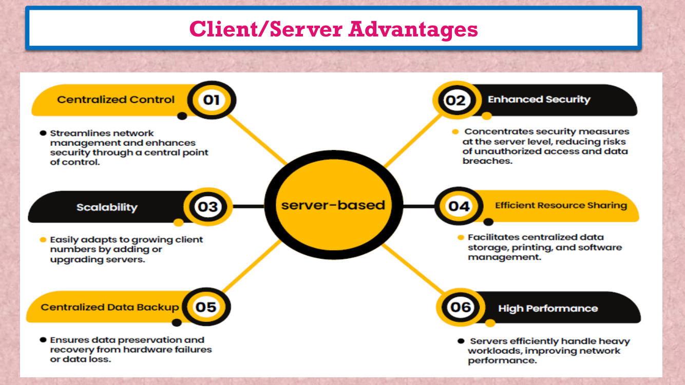
Disadvantages (slide 24)
- Dependency on central server: problems if the server goes down or becomes overloaded.
- Higher installation cost: needs a dedicated server (costlier than P2P (Peer-to-Peer)).
- Higher maintenance cost: more maintenance than P2P because of the dedicated server.
Slides 23–24
2. Peer-to-peer (P2P) model
- All processes play similar roles, interacting cooperatively as peers, with no difference between server and client processes (or the computers they run on).
- The problem with client/server is its scale-up problem: centralizing services at the server makes it overload under a large number of clients.
- The overload value is set by the server's capability and the network bandwidth (BW).
- So shared resources must be distributed to share computing and communication loads over many computers and network links.
- Today's PCs (Personal Computers) have more hardware capacity than yesterday's servers, so we can use these PCs.
- The aim of P2P: make use of the resources (data or hardware) of participating computers to fulfil a given task or activity.
- The most famous P2P instance is the Napster application.
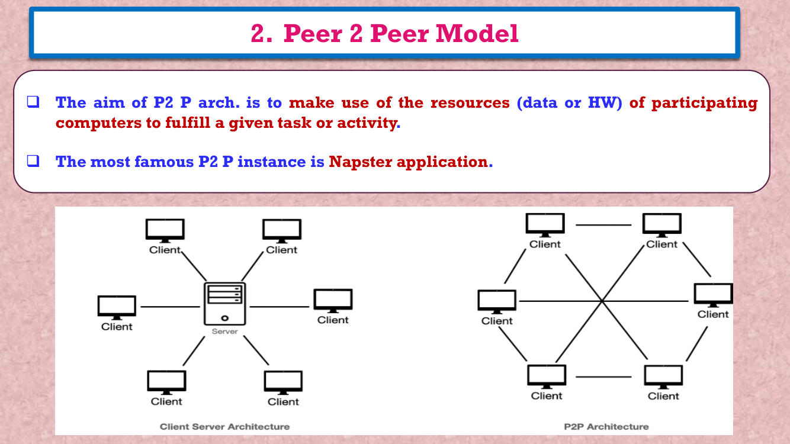
Slides 25–26 (diagram: client/server = clients around one server; P2P = clients linked directly to each other)
P2P (Peer-to-Peer) advantages and disadvantages
Advantages (slide 27, 6 points)
- Simplicity and minimal infrastructure: easy to set up and maintain without a central server.
- Data redundancy: ensures data recovery in case of peer failure.
- Cost-effective: economical for small-scale setups, no expensive server hardware or dedicated IT staff.
- No single point of failure: decentralized architecture enhances network reliability.
- Scalable: easily expandable by adding or removing devices without network disruptions.
- Resource sharing: effective for sharing files, printers, and internet connections among peers.
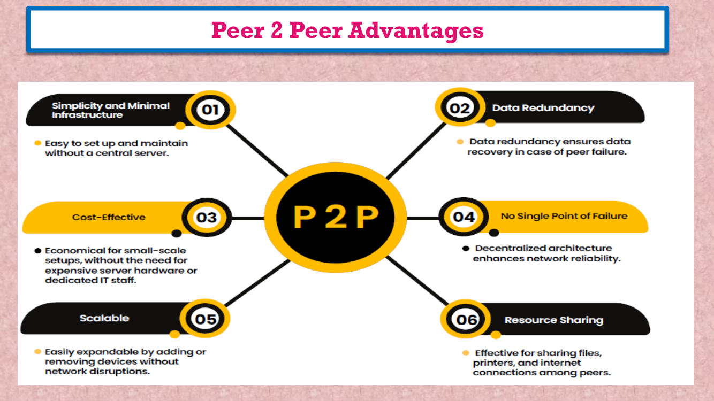
Disadvantages (slide 28)
- Unequal resource distribution: some peers have more resources than others.
- Security concerns: typically less secure than client/server because security is managed by individual computers, not the network as a whole.
- Performance limitations: traffic is distributed across multiple computers.
Slides 27–28
Client/server vs P2P (comparison)
| Point | Client-Server network | Peer-to-Peer network |
|---|---|---|
| Roles | Clients and server are differentiated; specific server and clients exist | Clients and server are not differentiated |
| Focus | Focuses on information sharing | Focuses on connectivity |
| Data | Centralized server stores the data | Each peer has its own data |
| Services | Server responds to services requested by the client | Each and every node can do both request and respond |
| Cost | Costlier | Less costly |
| Stability | More stable | Less stable if the number of peers increases |
| Size | Used for both small and large networks | Generally suited to small networks with fewer than 10 computers |
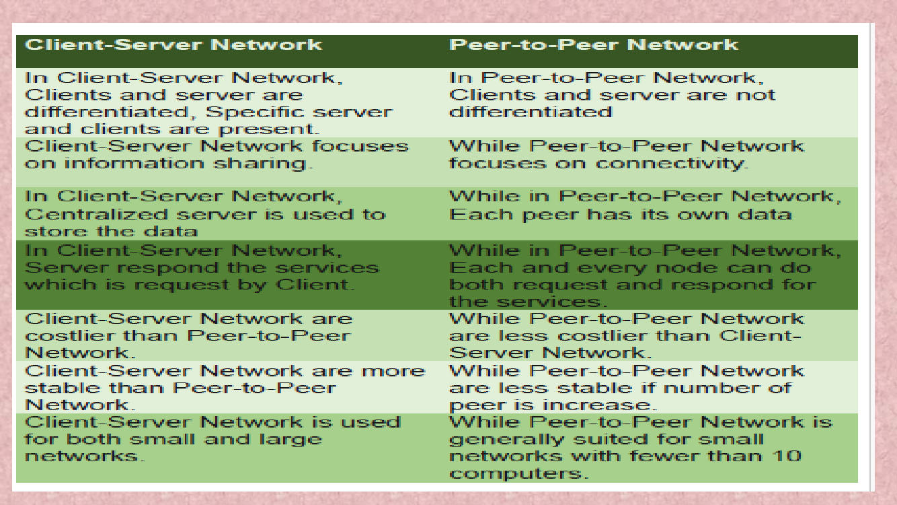
Slide 29
Napster (centralized directory P2P (Peer-to-Peer))
- An application for sharing music and video recordings among users around the world.
Client
- Connects to a Napster server.
- Uploads the list of music files to share (names only, not the files themselves).
- Server maintains a list of <filename, ip_address, portnum> tuples.
Search from a client (5 steps)
- Client sends the server keywords to search with.
- Server searches its directory with the keywords.
- Server returns a list of matching hosts as <ip_address, portnum> tuples.
- Client pings each host in the list to find transfer rates.
- Client fetches the file from the best host.
Diagrams
- Slide 31 (Napster structure): a few napster.com servers (S) store a directory, i.e. filenames with peer pointers (example row: PennyLane.mp3, info "Beatles, @ 128.84.92.23:1006"). Client machines ("Peers", P) connect to the servers and store their own files.
- Slide 32: screenshot of the Napster v2.0 BETA 7 client: search fields (Artist, Title, Max Results), a results table (filename, file size, bitrate, frequency, length, user, connection type, ping), buttons "Get Selected Songs" and "Add Selected User to Hot List", and a status bar showing files shared and files available.
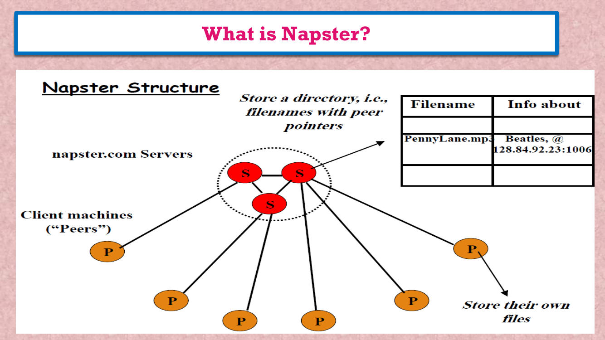
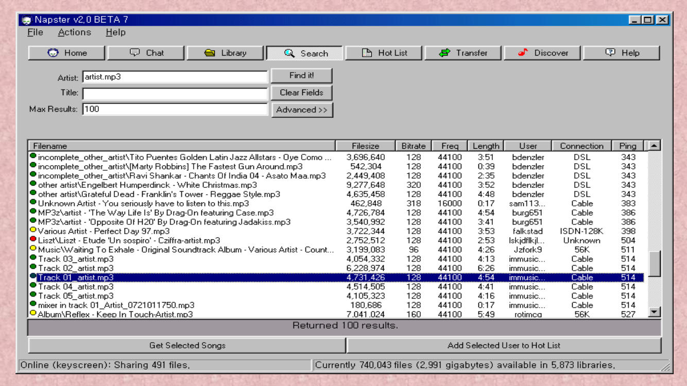
Slides 30–32
Gnutella (query flooding)
- A P2P (Peer-to-Peer) system based on query flooding.
- Peer join: on startup a node contacts at least one node and asks who its friends are. These become its "connected nodes".
- Search for file X: ask connected nodes; if they do not know, they ask their connected nodes, and so on. Once a reply is found, it is returned to the sender.
- If a node does not have the answer, it forwards the query. If it has the answer, it replies, and replies get forwarded back.
- Queries have a hop count (time to live) so we avoid forwarding loops.
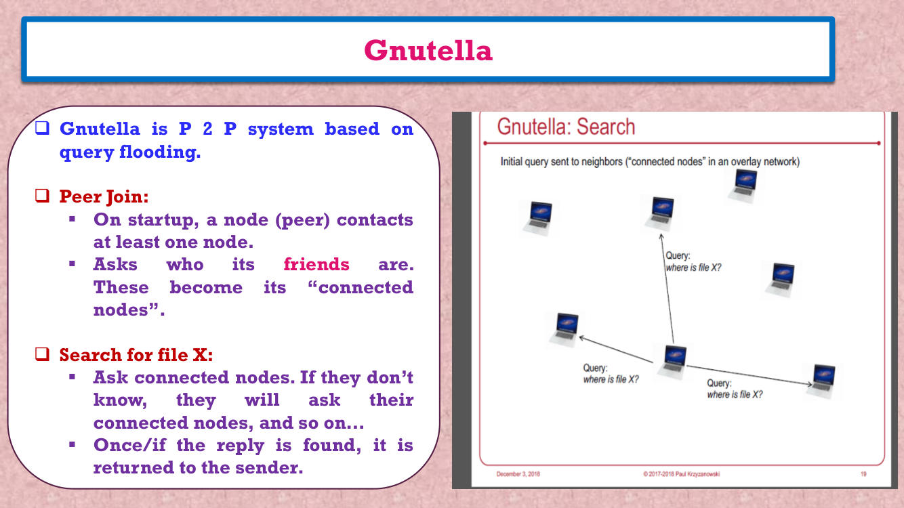
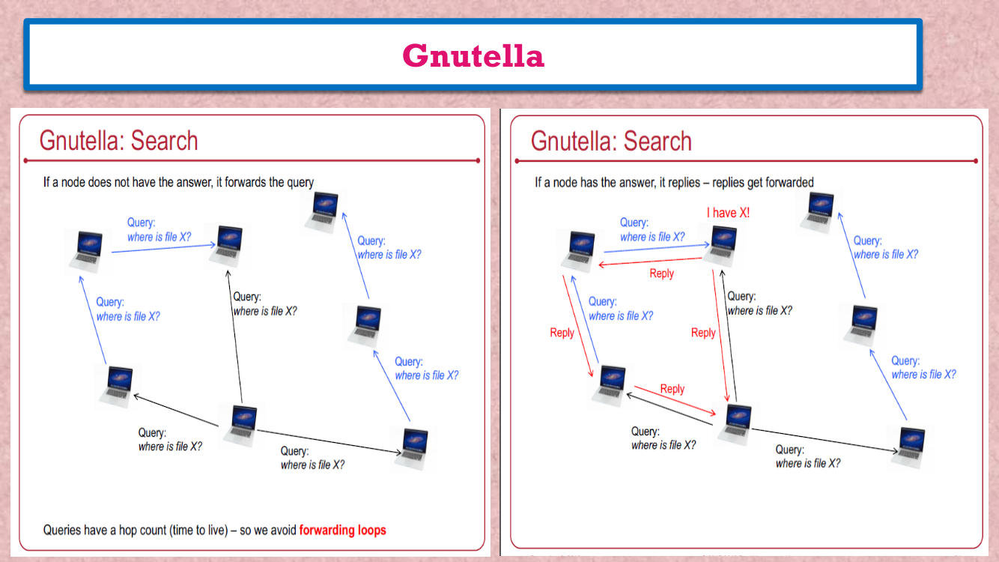
Slides 33–34 (diagrams: the initial query goes to neighbours in an overlay network; the node that has the file says "I have X!" and the reply travels back along the query path)
Kazaa (FastTrack, selective flooding with super nodes)
- Kazaa is a P2P (Peer-to-Peer) system that uses selective flooding of queries.
- Background: Kazaa and the FastTrack protocol were created in 2001, post-Napster and a year after Gnutella. Made by a team of Estonian programmers, the same team that later created Skype. FastTrack was also used by Grokster, iMesh and Morpheus; it is a proprietary protocol with several incompatible versions.
- Big idea: some nodes are better than others. A subset of client nodes with fast connectivity, lots of storage and fast processors become supernodes (similar to Gnutella's ultrapeers).
- Supernodes serve as indexing servers for slower clients and know other supernodes.
- Node join: a peer contacts a super node to join.
- Publish files: the peer sends its list of files to a super node.
- Search: send a query to the super node; super nodes flood the query to other super nodes. Supernodes answer for all their peers (ordinary nodes), and the reply goes back to the asking peer.
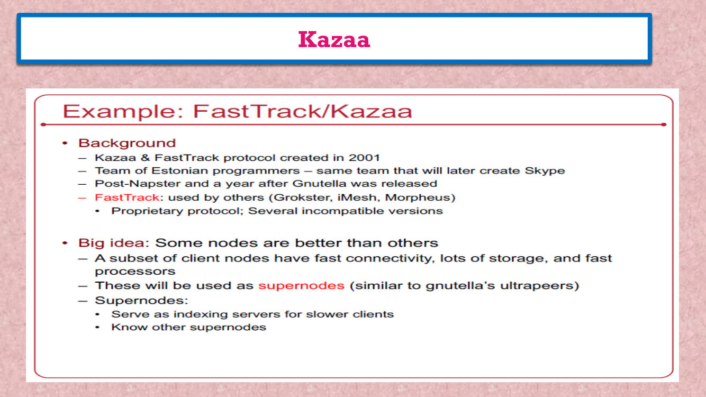
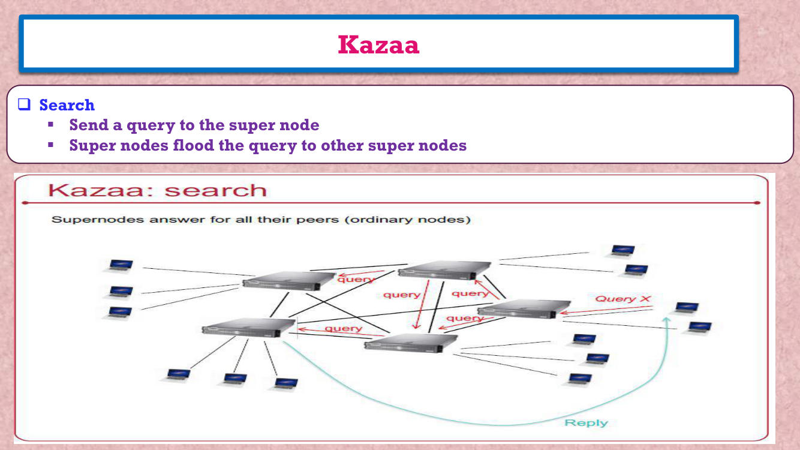
Slides 35–37
Napster vs Gnutella vs Kazaa
| Napster | Gnutella | Kazaa | |
|---|---|---|---|
| Core idea | Central server directory of filenames | Query flooding | Selective flooding of queries |
| Who knows where files are | Napster server keeps <filename, ip_address, portnum> tuples | Nobody central; peers ask connected nodes ("friends") | Super nodes index files for their peers |
| Join | Connect to a Napster server and upload the list of file names | Contact at least one node, ask who its friends are | Contact a super node |
| Publish | Upload file names only to the server | Not described; peers keep their own files | Send the list of files to a super node |
| Search | Send keywords to the server; get <ip_address, portnum> list; ping hosts; fetch from the best host | Ask connected nodes, who ask their connected nodes; hop count (time to live) avoids loops | Query to a super node; super nodes flood it to other super nodes |
Slides 30–37
3A. Multiple servers
- A service is implemented as several server processes in separate host computers that interact as needed to serve clients.
- Servers may partition the set of objects the service is based on and distribute them, or keep different copies (replicas) of the objects on several hosts. They must keep track of changes made on any host.
Two examples
- The web = partitioned data: distributed over different hosts, each server manages its own set of data files.
- NIS (Network Information Service) = replicated data: used by computers on a LAN (Local Area Network) to check users' logins. A copy (replica) of usernames and passwords is stored on each NIS server.
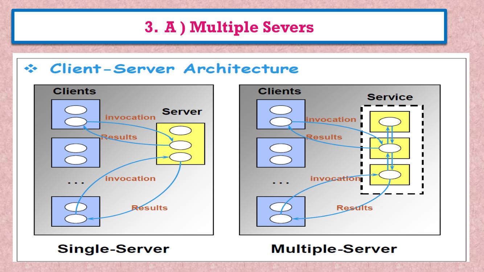
Slides 38, 44 (diagram: single-server = clients invoke one server; multiple-server = clients invoke a "Service" made of several servers that also talk to each other)
Partitioning vs replication on multiple servers
| PARTITION | REPLICATE | |
|---|---|---|
| What happens | Tasks (workload) are partitioned and distributed to different servers | The same tasks (services) are copied and the copies distributed to different servers |
| Benefits | Speed-up by executing tasks in parallel; load balance across servers; some fault tolerance (partial fault) | Achieves availability and fault tolerance; avoids contention and delay on one server, so increases throughput |
| Problems | How to partition; number of servers; heterogeneous server speed; workload balance | How to maintain replicated data consistency |
| Example | The web | NIS |
Passive vs active replication (slide 40 diagrams)
- Passive replication: clients use the primary (main) site; data changes are sent to a standby site/database (the diagram shows Main Server to Mirror Server, and a Primary Site to Standby Site via a "Data Guard Broker").
- Active replication: every server in the cluster is active and also holds replicas (diagram: a Couchbase server cluster where each node has "ACTIVE" and "REPLICA" parts and replication runs between nodes).
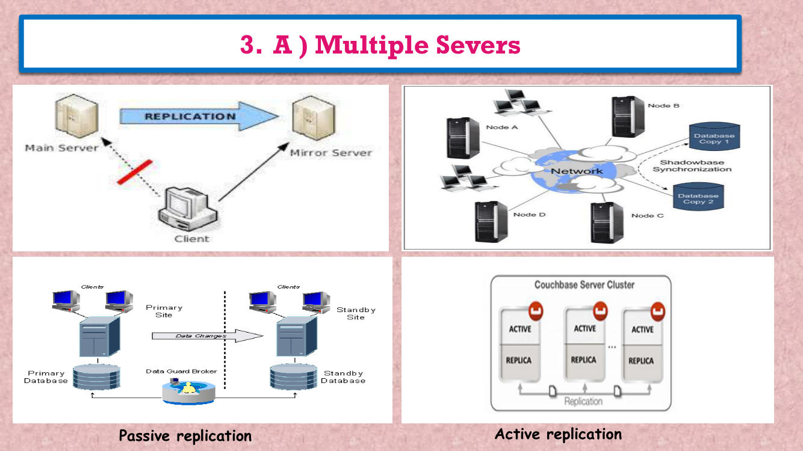
Task allocation vs services partitioning (slide 41 diagrams)
- Task allocation to servers: incoming tasks go to a central task scheduler that distributes them to the queues of Server 1, Server 2, ..., Server M.
- Services partitioning to servers: different servers handle different services (computing servers, media server, HTTP (Hypertext Transfer Protocol) server, database server) joined by a switch, serving clients over the Internet.
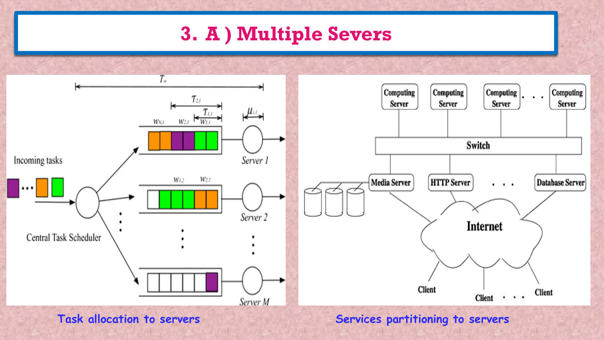
Slides 39–41
Cluster
- Cluster = a group of standard, autonomous servers configured so they appear on the network as a single machine (single system image).
- A cluster is an example of multiple-server architecture used for highly scalable web services.
- Service processing can be partitioned or replicated between them.
Cluster interconnect numbers (slide 42)
- Assume 10 Gbps per server, 40 servers per rack = 400 Gbps per rack.
- 16 racks (cluster of 4x4 racks) = 8 Tbps.
- Max switch capacity currently about 5 Tbps, so you need at least two cluster switches.
Cluster examples (slide 45)
- Replicated web servers: a front end handles incoming requests and sends them to replicated web servers that each hold the same web pages; requests are handled in round-robin fashion.
- Microsoft HPC (High-Performance Computing) Pack: Head node = cluster management, provides failover, mediates access to the cluster, and acts as job scheduler (queues jobs, initiates tasks on compute nodes, monitors status of jobs and nodes). Broker nodes = load-balance service requests and return results to the client. Compute nodes = carry out work assigned by the job scheduler.
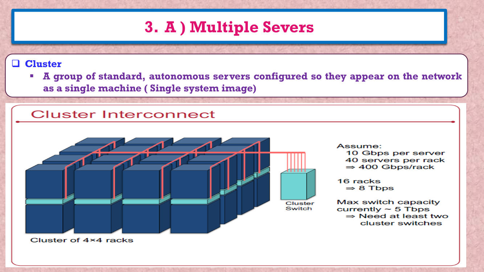
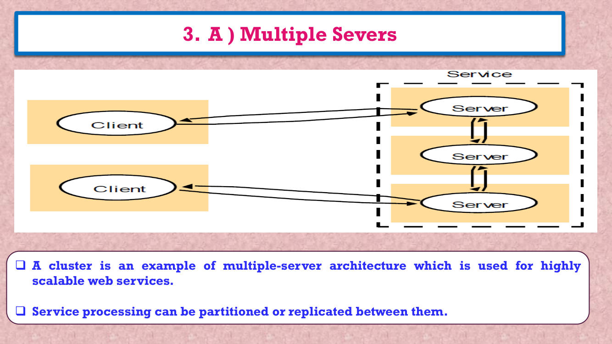
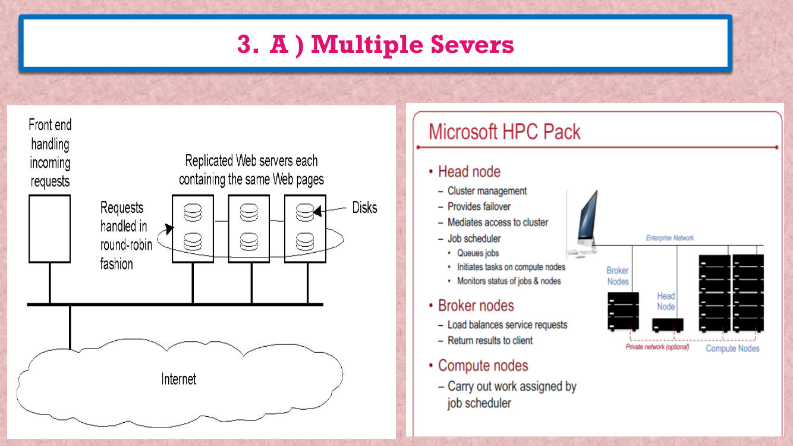
Slides 42–45
3B. Proxy server
- Web proxy servers provide a shared cache of web resources for client machines at a site or across several sites.
- A cache is a store of recently used data objects (e.g. recently visited web pages) that is closer to one client or a set of clients than the objects themselves.
- A newly received object is added to the cache; if the cache is full it replaces other objects.
- When a client needs an object, the caching service first checks the cache and supplies it if available and up to date. If not, an up-to-date object is fetched.
- The cache sits at a proxy server that can be shared by several clients.
- Purpose: increase availability and performance of services by reducing the load on the WAN (Wide Area Network) and web servers.
- Other roles: access remote web servers through a firewall; web filtering; making you anonymous (the website sees the proxy's IP (Internet Protocol), not yours).
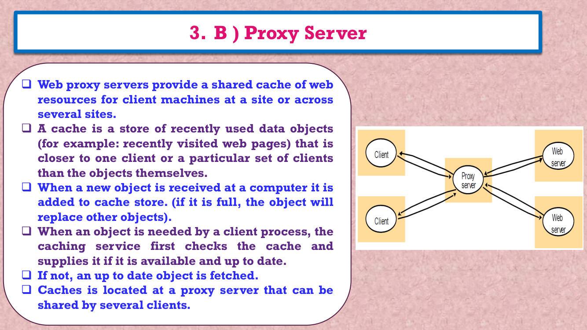
Slides 46–47 (diagram: clients talk to a proxy server, which talks to the web servers; the proxy forwards the request to the main server only if the resource is not in its cache memory)
3C. Mobile code
- The user's browser selects a link to a service whose code is stored on a web server.
- The code is downloaded to the user's browser and runs on the user's side.
- Examples: cookies, scripts, ActiveX, Java applets.
- Also called code migration. Why? Moving work from a heavily loaded system to a lightly loaded one (server and network).
- Applet steps: (a) the client request results in downloading of applet code; (b) the client interacts with the applet locally.
Example: applet
- Moving code to data, rather than data to code.
- Advantage: running locally gives good interactive response, with no delays or bandwidth variability from network load.
- Familiar example: up-to-date notifiers of new versions (e.g. virus scan programs). The applet code automatically contacts the server and displays whether a new version exists.
- Normal client/server is the pull model (the client must initiate communication each time). This applet style is the push model.
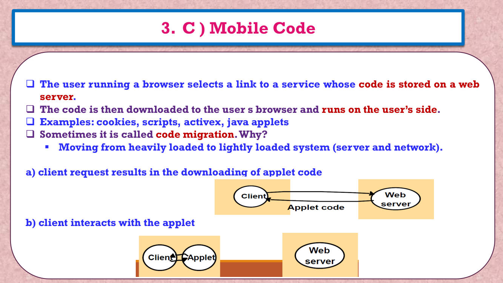
Slides 48–49
3D. Mobile agents
- A merge between DS and AI.
- A mobile agent is a running program (code AND data this time) that travels from one computer to another in a network, carrying out a task on someone's behalf (the client) and returning with the result.
- Example tasks: collecting information or search.
- It may use local resources at each site visited (e.g. accessing a DB [database]).
- Versus a static client that remotely invokes resources (possibly transferring data): a mobile agent converts remote invocation into local invocation, which means reduced communication cost and time.
- Uses: install and maintain software on computers in an organization; compare prices from several vendors by visiting each vendor's site and doing a series of DB operations.
- An old version at Xerox was the worm program, designed to use idle computers for intensive computations.
Problems
- Like mobile code, it raises the security problem of local resources on each visited computer.
- Each visited computer decides which local resources to allow according to the identity of the user who started the agent, so the user's identity must be included securely with the agent's code and data.
- An agent may fail to finish if denied resources it needs, so the applicability of mobile agents is limited.
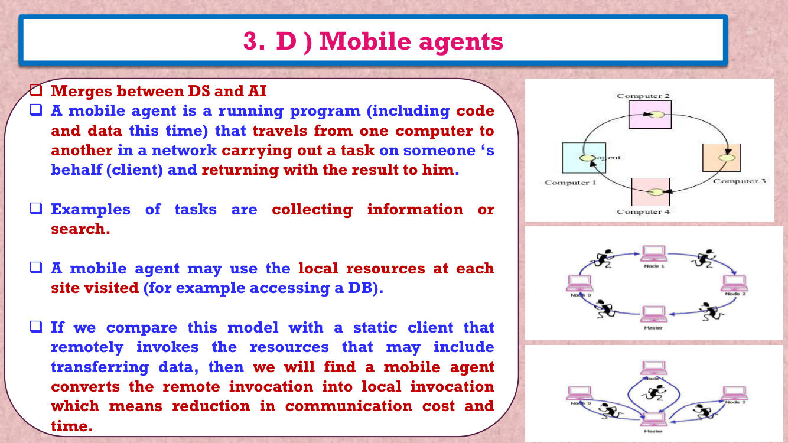
Slides 50–51
3E. Thin client / compute server
- Thin client = a software layer that supports a windows-based user interface on the computer local to the user, while application programs execute on a remote computer.
- Instead of downloading application code to the user's computer, the applications run on a compute server.
- Compute server = a powerful computer able to run large numbers of applications simultaneously. It could be a multiprocessor or cluster computer.
- Main disadvantage: highly interactive graphical activities (e.g. image processing); the user suffers delay because image and vector information must be transferred between the thin client and the application process at the server.
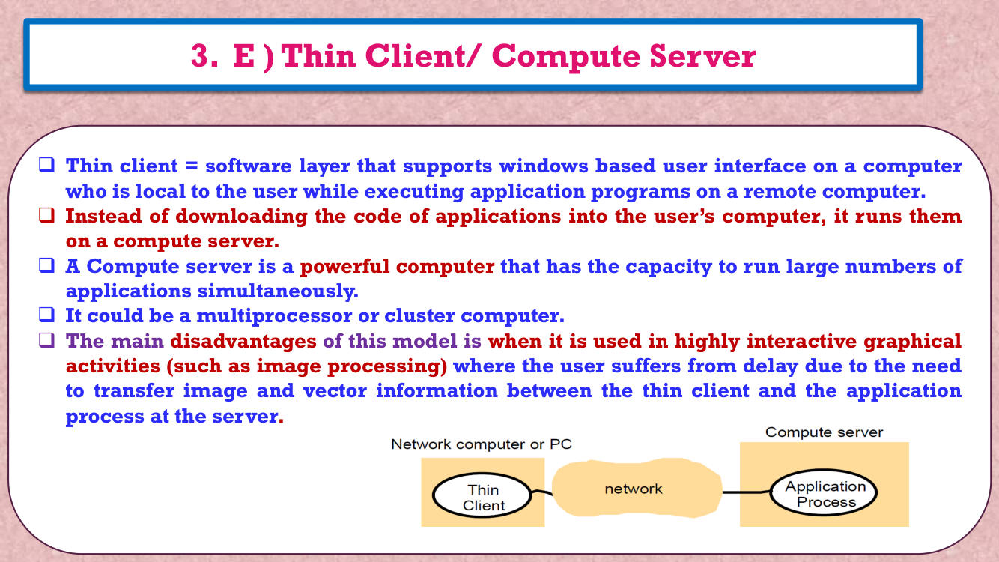
Slide 52 (diagram: Thin Client on a network computer or PC (Personal Computer), across the network, to an Application Process on the compute server)
Must-know in one screen
- The most important difference between distributed and uniprocessor systems is interprocess communication; all of it is message passing (no shared memory).
- Two ways to communicate between processors: shared memory or an interconnection network (message passing).
- Concurrent access to shared memory gives non-determinism (x = x+1 by two processors can give 1 instead of 2).
- EREW / CREW / ERCW / CRCW: first letter = read mode, second = write mode (E exclusive, C concurrent).
- Write-conflict rules: priority, all equal or all denied, or store max/min/sum/average.
- Shared-memory machines only work for small P (< 30); shared-memory SIMD (Single Instruction, Multiple Data) is unrealistic.
- Parallel search time: EREW, CREW, ERCW = O(N) + O(m/N); CRCW = O(m/N).
- Summing: sequential O(m); shared memory O((m/N) + N) + S (needs LOCK/UNLOCK); mesh O(m/N + 2(sqrt(N)) - 2 + C), result ends in P11.
- Message passing = private memory + send/receive; hybrid = clusters (bus inside, network between).
- Client/server is the most widely used model; the server is a process accepting requests; servers can be clients of other servers (web server to file server / DNS (Domain Name System)).
- Client/server: central control, security, backup, scalability. Weak points: central server dependency, higher install and maintenance cost. P2P (Peer-to-Peer): no single point of failure, cheap, but less secure, unequal resources, performance limits.
- Napster = central directory server (file names only, ping hosts, fetch from best). Gnutella = query flooding with hop count. Kazaa = selective flooding via supernodes (FastTrack, 2001).
- Multiple servers: partition (web, speed-up, load balance) vs replicate (NIS, availability, consistency problem). Cluster = single system image.
- Proxy server = shared cache, reduces WAN (Wide Area Network) and web server load. Mobile code = code runs on the client (push model); mobile agent = code + data travels and returns a result (security problem).
- Thin client = UI local, applications on a compute server; weak for highly interactive graphics.
Lecture 5 · Distributed File System
Why do we need a DFS?
- Primary purpose of a distributed system: connecting users and resources.
- Resources can be inherently distributed.
- Resources can actually be data (files, databases, ...).
- Their availability becomes a crucial issue for the performance of a distributed system.
- Story: one server (Server A) fills up, so you buy more servers (B, C). Now you ask "where did I put my docs?". The fix is a Distributed File System [DFS].
- With a DFS you can access your folders from anywhere and do not need to remember which server holds the data.
- A DFS is reliable, fault tolerant, highly available, location transparent.
Slides 4–7
Storage systems and their properties
| Period | What it was |
|---|---|
| 1974 - 1995 | First generation of distributed systems. File systems (e.g. Network File System [NFS]) were the only networked storage systems. |
| 1995 - 2007 | Distributed object systems (Common Object Request Broker Architecture [CORBA], Java) and the web. The picture became more complex. |
| 2007 - now | Focus on large scale, scalable storage: Google File System, Amazon Simple Storage Service [S3], cloud storage (e.g. DropBox). |
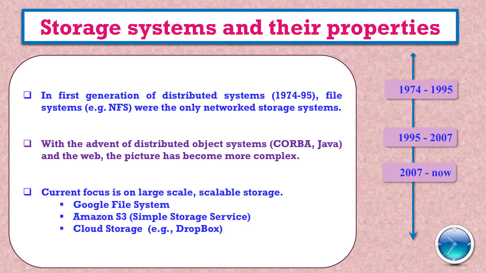
Slide 8
What is a file system?
- Persistent stored datasets.
- Hierarchic namespace visible to all processes.
- Application Programming Interface [API]: access and update operations on persistently stored datasets; sequential access model (with additional random facilities).
- Sharing of data between users, with access control.
- Concurrent access: certainly for read-only access; what about updates?
- On a single processor, a file system stores programs and data and makes them available when called.
- A file = collection of data with a user view (file structure) and a physical view (blocks).
- A directory = a file that provides a mapping from text names to internal file identifiers.
- File management tasks:
- Naming and locating a file
- Accessing a file: create, delete, open, close, read, write, append
- Physical allocation of a file
- Security and protection of a file
Slide 11 is a Windows right-click menu on a file (Open, Share with, Cut, Copy, Create shortcut, Delete, Rename, Properties). It is only an example of the operations a file system offers the user.
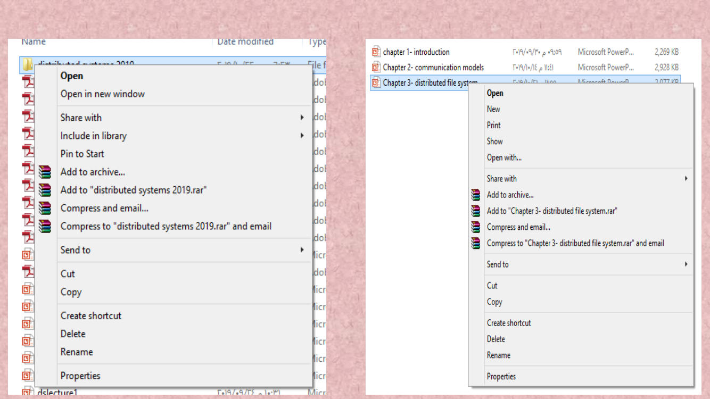
Slides 9–11
File system modules (non-DFS (Distributed File System))
Typical module structure for a normal (non-distributed) file system:
| Module | Job |
|---|---|
| Directory module | relates file names to file IDs |
| File module | relates file IDs to particular files |
| Access control module | checks permission for the operation requested |
| File access module | reads or writes file data or attributes |
| Block module | accesses and allocates disk blocks |
| Device module | disk I/O and buffering |
Layers from bottom to top: Device, Blocks, Files, Directories.
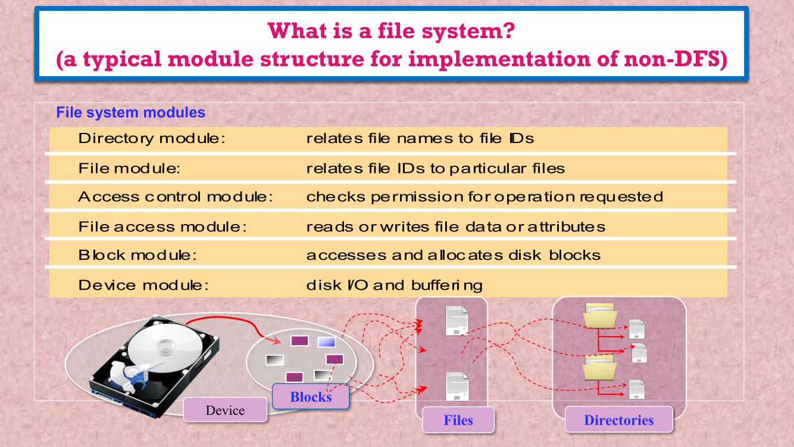
Slide 12
File service vs file server vs DFS (Distributed File System)
| Term | Meaning |
|---|---|
| File service | The specification of what the file system offers to its clients. Describes the primitives, their parameters and what they do. Users see the interface without knowing how it is implemented. |
| File server | A process that runs on a machine and helps implement the file service. |
| DFS | A file system with distributed storage and distributed users. Files may be located remotely on servers and accessed by multiple clients. E.g. NFS and Andrew File System [AFS]. |
- A distributed system may have one or more file servers.
- The user should not know whether there is a single or multiple servers. Ideally it looks like a single-processor file system.
- Example: two file servers, one for Unix and one for DOS. The same client can have two windows open, one running Unix and one running DOS, with no conflict.
Slide 13
DFS (Distributed File System) / file service requirements (8 items)
The slide lists eight requirements: Transparency, Concurrency, Replication, Heterogeneity, Fault tolerance, Consistency, Security, Efficiency.
| Requirement | Key points |
|---|---|
| Transparency |
Access: same operations; clients are unaware that files are distributed. Location: same name space after relocation of files or processes (uniform file name space). Mobility: automatic relocation of files is possible; neither client programs nor admin tables in client nodes need to change when files move. Performance: satisfactory performance across a specified range of system loads. Scaling: service can be expanded to meet additional load or growth. |
| Concurrency | Isolation: changes by one client must not interfere with other clients accessing or changing the same file at the same time. File-level or record-level locking. Other concurrency control to minimise contention. |
| Replication | File service maintains multiple identical copies of files. Benefits: load sharing between servers (more scalable), local access has better response (lower latency), fault tolerance. Full replication is difficult to implement. Caching gives most of the benefits (except fault tolerance). |
| Heterogeneity | Clients on (almost) any OS (Operating System) or hardware platform. Design must be compatible with the file systems of different OSes. Service interfaces must be open: precise API (Application Programming Interface) specifications are published. |
| Fault tolerance | Service must continue to operate when clients make errors or crash. Must resume after a server machine crashes. If replicated, it can continue even during a server crash. |
| Consistency | Unix offers one-copy update semantics for local files (caching is completely transparent). Difficult to achieve the same in a DFS while keeping good performance and scalability. |
| Security | Access control and privacy as for local files: based on identity of the user; remote users must be authenticated; privacy needs secure communication. Interfaces are open to all processes not excluded by a firewall, so they are vulnerable to impersonation and other attacks. |
| Efficiency | Goal: performance comparable to a local file system. |
The file service is the most heavily loaded service in an intranet, so its functionality and performance are critical.
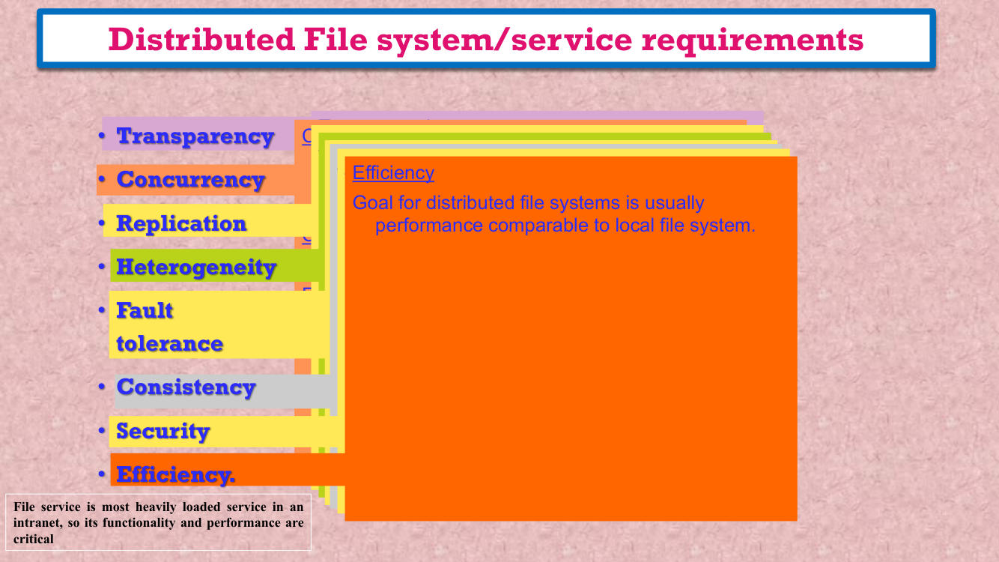
Slide 14
File service architecture
Three components give a clear separation of concerns:
| Component | Where | Responsibility |
|---|---|---|
| Flat file service | Server | Operations on the contents of files. Files are referred to by Unique File Identifiers [UFIDs]: long bit sequences chosen so each file is unique among all files in the distributed system. |
| Directory service | Server | Provides the mapping between text names and UFIDs. A client gets a UFID by quoting the text name. Supports creating directories and adding new files to directories. |
| Client module | Each client computer | Gives application programs one integrated API (Application Programming Interface) (flat file + directory). In Unix hosts it emulates the full set of Unix file operations. Holds the network locations of the flat-file and directory server processes. Keeps a cache of recently used file blocks for better performance. |
The client module implements the interfaces exported by the flat file and directory services on the server side.
Diagram: application programs sit on the client module (client computer). The client module talks to the directory service and the flat file service (server computer). The flat file service sits on top of the disks.
- Directory service operations: Lookup, AddName, UnName, GetNames.
- Flat file service operations: Read, Write, Create, Delete, GetAttributes, SetAttributes.
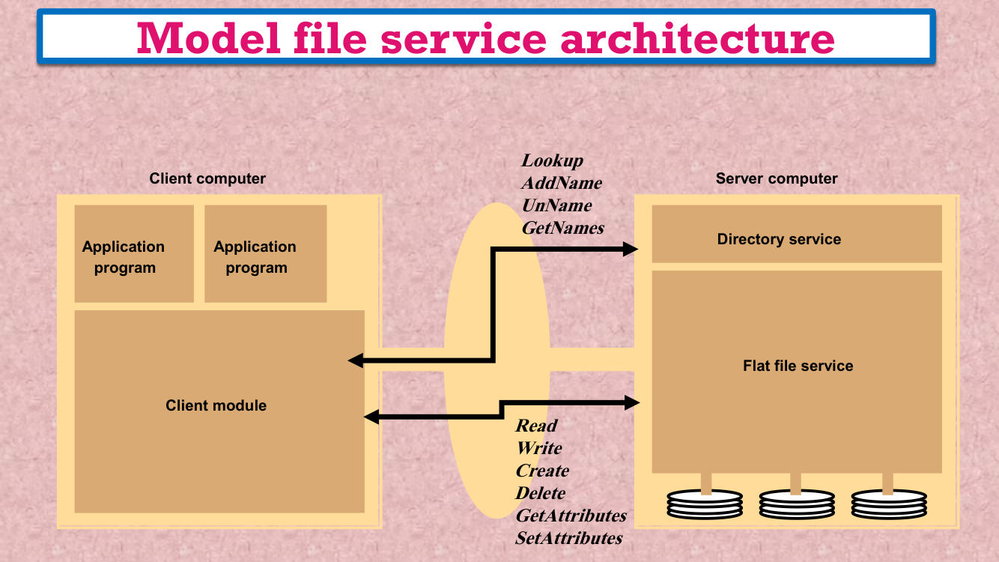
Slides 15–17
Access control in a DFS (Distributed File System)
- A user identity has to be passed with requests.
- The server first authenticates the user.
- An access check is made whenever a file name is converted to a UFID. The result is encoded as a capability and returned to the client for future access.
- Capability = per user, the list of objects allowed to access and the type of access allowed (could be broken up per (user, object)).
- A user identity is submitted with every client request, and an access check is performed for every file operation.
Slide 18
File service models: upload/download vs remote access
| Upload/download model (cached system) | Remote access model (remote service) | |
|---|---|---|
| Operations | Only two major operations: read file / write file. | Many operations: open, close, read/write parts of a file, seek, examine and change attributes, etc. |
| Where the work happens | Read file moves the entire file from server to client; accesses are done on the client; when done, the file is returned to the server (write file sends the entire file back). | All file actions are implemented by the server. The file system runs on the servers, not on the clients. The file stays on the server; clients send requests. |
| Copies | One master copy at the server; copies of (parts of) the file are scattered in different caches. | No client copy; file stays on the server. |
| Mechanism | Cache of recently accessed disk blocks, so repeated accesses are handled locally. | Uses Remote Procedure Call [RPC] functions. |
| Advantages | Many "remote" accesses handled by the local cache; most as fast as local; servers contacted only occasionally; reduces server load and network traffic; enhances scalability; reduces total network overhead; simple (local file usage, so the file service interface is simple). | Used for small-memory, diskless machines. Particularly applicable if there is a large amount of write activity. |
| Disadvantages | Client storage may be too small to hold the file. Even if the client uses only part of the file, the whole file is transferred (wastes time and network bandwidth [BW]). Cache-consistency problem: keeping cached copies consistent with the master file. | (Not listed on the slides. Compare with caching: penalty in network traffic, server load and performance.) |
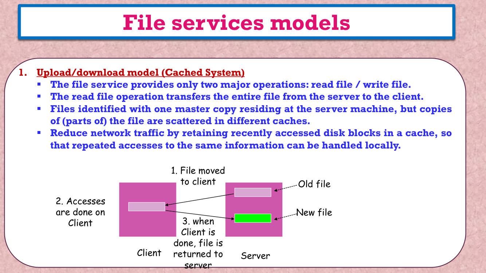
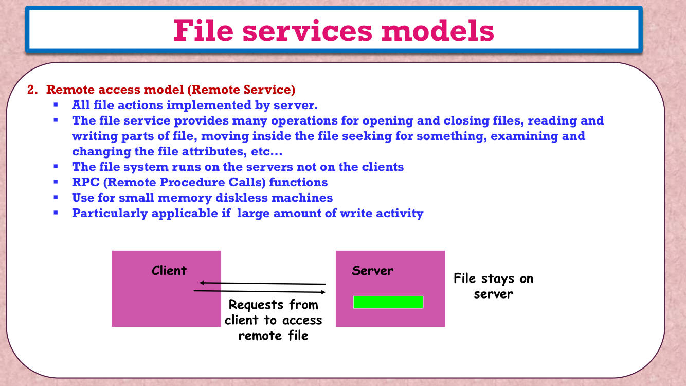
Slides 19–21
Cache location: disk vs main memory
The diagram (Fig. 5-9) shows four places to store files or parts of files:
- Server's disk
- Server's main memory
- Client's main memory
- Client's disk (optional)
The client and server are connected by the network.
| Disk cache (client's disk) | Main-memory cache |
|---|---|
| More reliable. | Permits workstations to be diskless. |
| Cached data on disk is still there during recovery, no need to fetch it again. | Data can be accessed more quickly. |
| Performance speedup in bigger memories. | |
| Server caches (to speed up disk I/O) are in main memory anyway, so main-memory caches on the user machine allow a single caching mechanism for servers and users. |
Slides 22–23
Consistency (cache validity)
Question: is the locally cached copy consistent with the master copy?
| Client-initiated approach | Server-initiated approach |
|---|---|
| The client initiates a validity check. | The server records, for each client, the (parts of) files it caches. |
| The server checks whether the local data is consistent with the master copy. | When the server detects a potential inconsistency, it must react. |
Slide 24
Cache update policy: write-through vs delayed write
| Write-through | Delayed write | |
|---|---|---|
| How | Write data through to disk as soon as they are placed in any cache. Another client reading the file gets the most up-to-date data from the server. | Modifications are written to the cache and written through to the server later. |
| Good | Reliable. | Write accesses complete quickly. Some data may be overwritten before being written back, so it need never be written at all. |
| Bad | Poor performance. | Poor reliability: unwritten data is lost whenever a user machine crashes. |
Two variations of delayed write:
- Variation 1: scan the cache at regular intervals and flush blocks modified since the last scan.
- Variation 2: write-on-close: write data back to the server when the file is closed. Best for files open for long periods and frequently modified.
Slide 25
Caching vs remote service
| Caching | Remote server (remote service) method |
|---|---|
| Many remote accesses handled by the local cache; most served as fast as local. | Handles every remote access across the network. |
| Servers contacted only occasionally, not for each access. | Penalty in network traffic, server load and performance. |
| Reduces server load and network traffic; enhances scalability. | Total network overhead of big chunks (caching) is lower than a series of responses to specific requests (remote service). |
| Superior with infrequent writes. With frequent writes, substantial overhead to solve the cache consistency problem. | Use on diskless, small-memory machines. |
| Benefits machines with local disks or large main memories. | The intermachine interface mirrors the local user-file-system interface. |
| The lower intermachine interface is different from the upper user interface. |
Slides 26–27
The directory server interface
- Operations: creating and deleting directories; naming and renaming files; moving files from one directory to another.
- These services are performed on the local or remote file.
- The directory server uses some alphabet and syntax for file and directory names.
- Some systems split names in two parts, e.g. prog.c or amany.doc (the second part gives the type). Others use an explicit attribute for the type instead.
- All distributed systems let a directory contain directories.
- When listed, a directory shows only the files in it.
Slide 28
State of service: stateless vs stateful server
Question: how much state does the service maintain about its clients? Two answers: stateless or stateful.
| Stateless file server | Stateful file service | |
|---|---|---|
| Idea | Server carries out the request, sends the reply, then removes all information about the request from its tables. No client-specific information between requests. | Server keeps information about the client between requests. |
| Requests | Each request is self-contained: it identifies the full file name and offset (position). | On open, server fetches file info from disk, stores it in memory, and gives the client a unique connection identifier. The identifier is used for later accesses until the session ends. Server knows which client has which file open. |
| Open/close | No need to establish/terminate a connection with open and close. | Uses open/close (as in Unix and Windows). |
| Advantages | Failure and recovery are almost unnoticeable. A restarted server answers self-contained requests without difficulty. No state to reclaim. | Increased performance. Fewer disk accesses. Knows a file was opened for sequential access, so it can read ahead the next blocks. |
| Disadvantages | Poor support for locking or synchronization among concurrent accesses. | Server must reclaim main-memory space used by clients that are no longer active. State is lost in a crash (see below). |
| Failure recovery | Almost unnoticeable. | Loses all volatile state in a crash. Restores client state with a recovery protocol based on a dialog with clients. Must be aware of crashed client processes: orphan detection and elimination. |
Slides 29–32
DFS (Distributed File System) replication
- DFSs often provide file replication as a service to clients.
- Done for selected important files, with each copy on a different server.
- Advantages: improves availability (backups are available); shortens service time by introducing multiple servers.
- Replication transparency: the naming scheme maps a replicated file name to a particular replica.
- Existence of replicas should be invisible to higher levels.
- Replicas must be distinguished from one another by different lower-level names.
- Updates: replicas of a file denote the same logical entity, so an update to any replica must be reflected on all other replicas.
Three reasons for replication (slide 33):
- Increase reliability with independent backups of each file. If one server goes down or is lost permanently, no data is lost.
- Allow file access even if one file server is down. Motto: "The show must go on." A server crash should not bring the whole system down.
- Split the workload over multiple servers. As the system grows, one server becomes a performance bottleneck; with replicas, the least heavily loaded server can be used.
Slides 33–34
Must-know in one screen
- A DFS (Distributed File System) gives location transparency: users do not need to know which server holds a file.
- File service = specification of what is offered (interface). File server = process that implements it.
- DFS = file system with distributed storage and distributed users (e.g. NFS, AFS).
- Eight requirements: Transparency, Concurrency, Replication, Heterogeneity, Fault tolerance, Consistency, Security, Efficiency.
- Transparency types: Access, Location, Mobility, Performance, Scaling.
- Architecture: flat file service + directory service + client module.
- A UFID is a long bit sequence that is unique across the whole distributed system; the directory service maps text names to UFIDs.
- The client module gives one API (Application Programming Interface) and keeps a cache of recently used file blocks.
- Capability = result of the access check when a name is converted to a UFID; identity is sent and checked on every request.
- Upload/download moves the whole file to the client (cache consistency problem); remote access keeps the file on the server and uses RPC (Remote Procedure Call).
- Four cache places: server disk, server memory, client memory, client disk (optional). Disk cache = more reliable; memory cache = faster and allows diskless clients.
- Consistency checks: client-initiated (client asks) vs server-initiated (server tracks who caches what).
- Write-through = reliable but slow. Delayed write = fast but data lost on client crash. Write-on-close suits long-open, frequently modified files.
- Caching wins with infrequent writes; remote service for diskless, small-memory machines.
- Stateless = self-contained requests (full name + offset), easy recovery, poor locking. Stateful = connection ID (Identifier), faster, read-ahead, hard recovery (orphan detection). Replication = availability, reliability, load sharing; updates must reach all replicas.
Not in your slides
Questions your 5 lectures don't teach. They are left out of every other tab.
Mistakes in the files
Where a model answer, printed key or bank was wrong or doubtful. The page uses the corrected answer.
Every abbreviation used in the lectures and exams. Say the full name, then flip.